第 3 章 同步互斥与死锁
PV 三铁律、生产者-消费者、读者写者、哲学家与银行家算法。
来源：
raw/ch3-进程同步与互斥.pdf（共 182 页，本笔记覆盖前 95 页） 教材风格：课程 OS 教材 写给：零基础学 OS 的实习生（有 Java 基础）
0. 章节导览
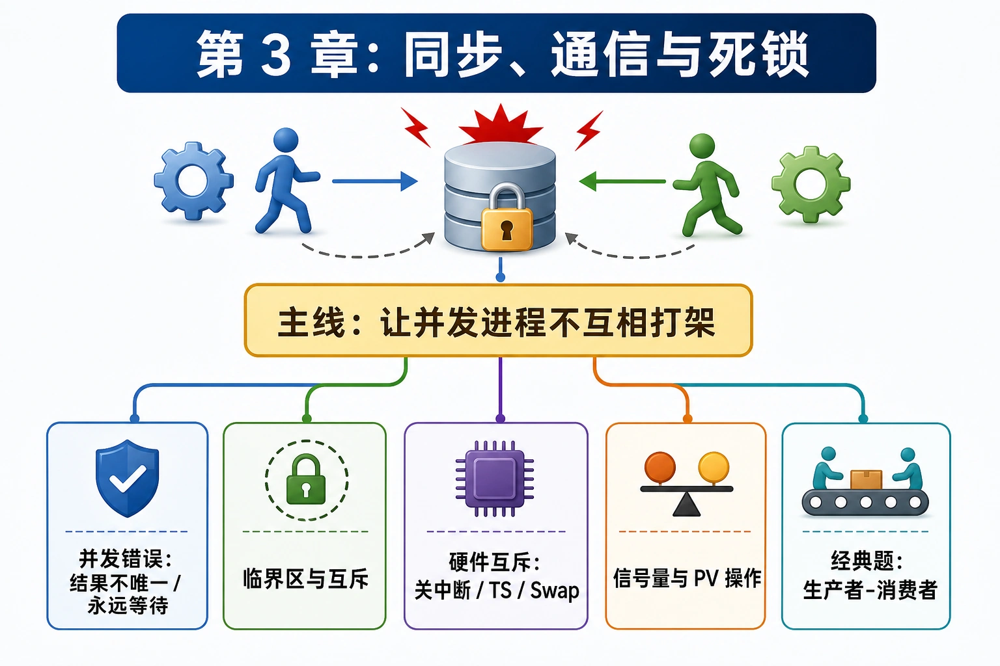
第 2 章把”一个进程在 CPU 上怎么跑”讲清楚了。但现实里 OS 同时养着几十上百个进程，它们会互相打架——抢同一个变量、抢同一台打印机、互相等对方先动手。这章就是讲怎么让并发的进程不互相打成一团。
学完前半你应该能回答：
- 两个进程同时改一个变量，为什么会算错？（→ 3.1）
- 什么是”临界区”？为啥它要被”保护”？（→ 3.2）
- 单 CPU 时代，靠”关中断”就能互斥吗？多 CPU 呢？（→ 3.3）
- 硬件的 TestAndSet / Swap 指令凭啥能”原子”？（→ 3.3）
- PV 操作到底在干嘛？P 是申请，V 是释放，记不住怎么办？（→ 3.5，必考）
- 解互斥用 1 个信号量，解同步要不要也用 1 个？（→ 3.6, 3.7）
- 生产者-消费者问题：单缓冲、多缓冲，分别要几个信号量？P 顺序能换吗？（→ 3.8，必考）
核心心法：本章 80% 的题最后都归结为”给我列出几个信号量、写出 PV 调用顺序“。会写 PV 模板，这章就赢一半。
3.1 并发进程的基本错误
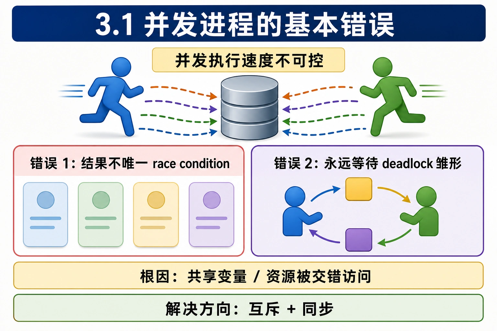
顺序 vs 并发：先把名词搞清
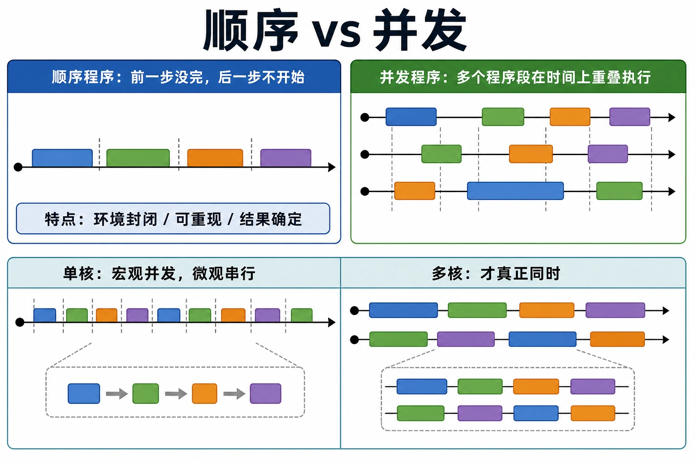
顺序程序设计：一个程序从头执行到尾，前一步没做完后一步不开始。 - 三个特点：环境封闭（外界不打扰）、过程可重现（同输入同结果）、结果确定。 - 类比：一个人按食谱做菜，1 步切菜 → 2 步炒锅 → 3 步装盘，谁也不打断他。
并发程序设计：多个程序段在时间上重叠执行。 - 单核 CPU：宏观并发（一个时间段几个进程都在”运行中”），微观仍是串行（同一瞬间只有 1 个在 CPU 上）。 - 多核：才真正”同时”。 - 类比：一个厨师同时管 3 口锅——切菜、炒菜、装盘交替进行。
为什么要并发？（第 28-29 页）
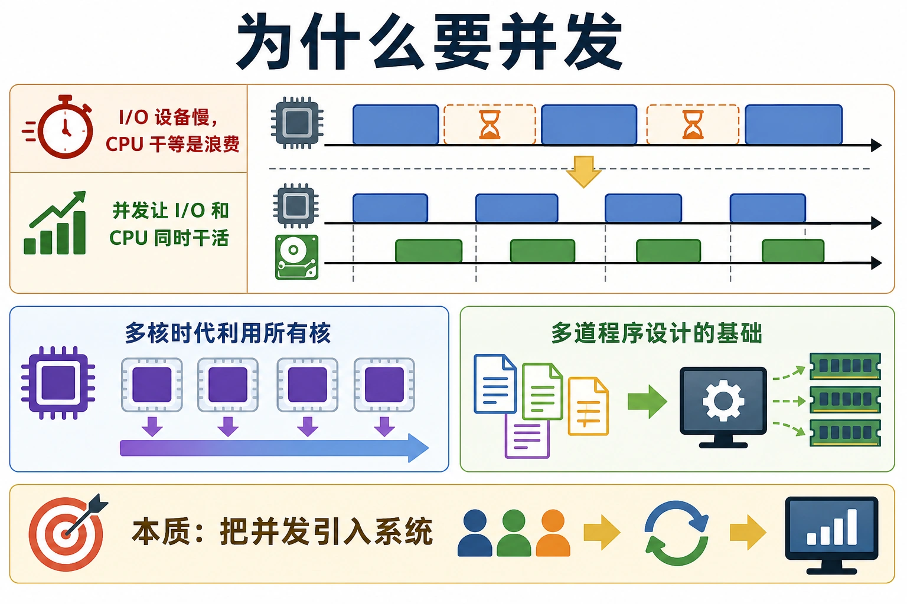
- I/O 设备和 CPU 速度差几个数量级，让 CPU 干等是浪费。并发能让 I/O 和 CPU 同时干活。
- 多核时代，并发能利用所有核。
- 并发程序设计是多道程序设计的基础——多道的本质就是把并发引入系统。
并发进程分两类（第 24 页）
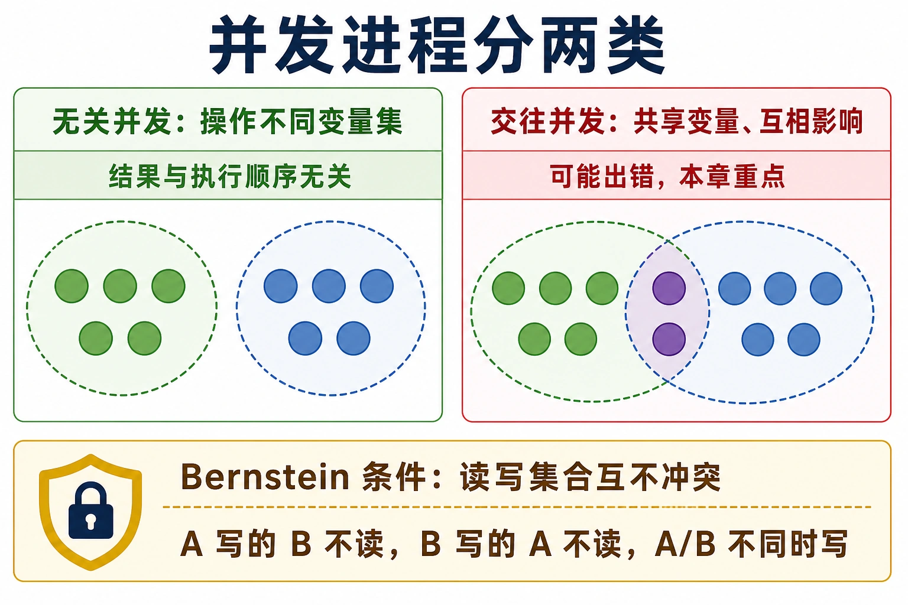
| 类型 | 含义 | 是否有问题 |
|---|---|---|
| 无关并发 | 各进程操作不同变量集 | 安全，结果与执行顺序无关 |
| 交往并发 | 共享变量、互相影响 | 可能出错，本章重点 |
Bernstein 条件（无关并发的判定）：
- R(p) = 进程 p 读的变量集；W(p) = 进程 p 写的变量集。
- 两个进程”无关”等价于：R(p1)∩W(p2) = ∅ 且 R(p2)∩W(p1) = ∅ 且 W(p1)∩W(p2) = ∅。
- 通俗：A 写的 B 不读、B 写的 A 不读、A B 不同时写。
- 例子：S1: a:=x+y; S2: b:=z+1 → R(S1)={x,y}, W(S1)={a}, R(S2)={z}, W(S2)={b} → 三个交集都空 → S1、S2 可放心并发。
与时间有关的错误（第 30 页，本章核心痛点）
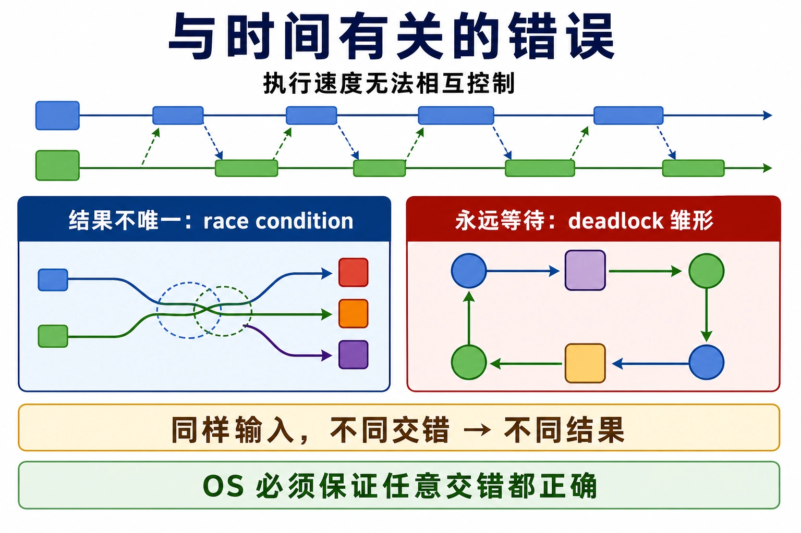
并发进程的执行速度无法相互控制，会出现两类错误：
- 结果不唯一（race condition）
- 永远等待（deadlock 死锁的雏形）
错误一：结果不唯一 — 飞机票售票问题（第 31 页）
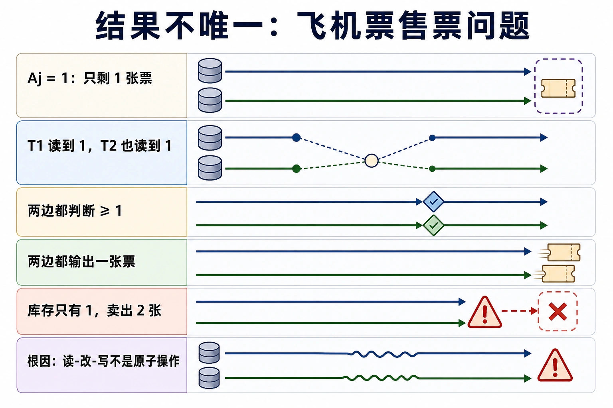
两个售票点同时卖第 j 班次：
void T1() { void T2() {
// 找到 Aj // 找到 Aj
int X1 = Aj; int X2 = Aj;
if (X1 >= 1) { if (X2 >= 1) {
X1--; X2--;
Aj = X1; Aj = X2;
// 输出一张票 // 输出一张票
} }
}
设 Aj=1（只剩 1 张），T1、T2 同时跑： - 各自读到 X1=X2=1 → 都判 ≥1 → 都减到 0 → 都”输出一张票” → 卖了两张票，但库存只有 1 张！
画成时序图（原图见 img-032-001，已转 ASCII）：
情况一（串行）：
A: R1=X → R1=R1+1 → X=R1
B: R2=X → R2=R2+1 → X=R2
结果: X = X+2 ✓
情况二（交错）：
A: R1=X → R1=R1+1 → X=R1
B: R2=X → R2=R2+1 → X=R2
结果: X = X+1 ✗（一次更新被吞了）
根因：X=X+1 不是原子操作，被编译成”读-改-写”3 步，两个进程把 3 步交错执行就出错。这就是著名的 lost update（丢失更新）。
错误二：永远等待 — 内存申请归还问题（第 33-34 页）
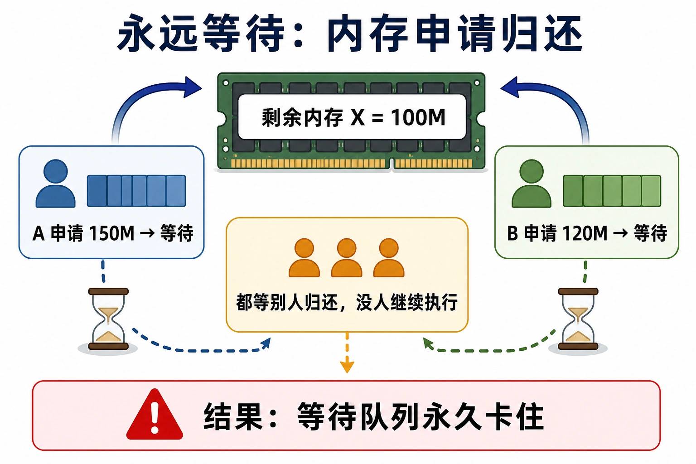
int X = memory; // 剩余内存
void borrow(int B) {
if (B > X) { 进程进等待队列; }
X = X - B;
// 修改内存分配表
}
void return(int B) {
X = X + B;
// 修改内存分配表
// 释放等待进程
}
时序： - 进程 A 已占 300M，运行后申请 150M； - 进程 B 已占 200M，运行后申请 120M； - 用户区共 600M，已被占 500M，剩 100M。 - A 申请 150M → 100<150 → 进等待队列； - B 申请 120M → 100<120 → 进等待队列； - 两个都不还内存就一直等 → 互相饿死。
进程交往的两种关系（第 35-42 页）
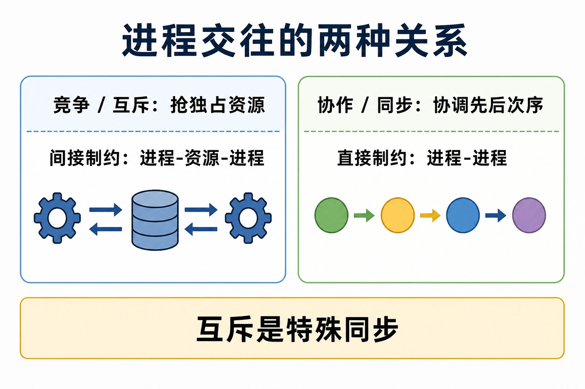
| 关系 | 别名 | 本质 |
|---|---|---|
| 竞争（互斥） | 间接制约 | 抢独占资源（打印机、共享变量） |
| 协作（同步） | 直接制约 | 协调先后次序（生产先于消费） |
互斥伴生的两个病： - 死锁：互相等对方释放资源 → 永远卡住 - 饥饿：某进程一直被忽略 → 等到天荒地老
互斥 vs 同步对比（重要概念表）：
| 维度 | 同步 | 互斥 |
|---|---|---|
| 关系 | 进程-进程 | 进程-资源-进程 |
| 触发 | 时间次序上有要求 | 抢同一资源 |
| 知不知道对方 | 清楚（要交换信息） | 不一定清楚 |
| 例子 | 生产-消费、写-读 | 十字路口、共享变量 |
关键洞察：互斥可以看成一种特殊的同步——“对资源使用次序的协调”。所以最终都用同一套工具（信号量）解决。
3.2 临界资源与临界区
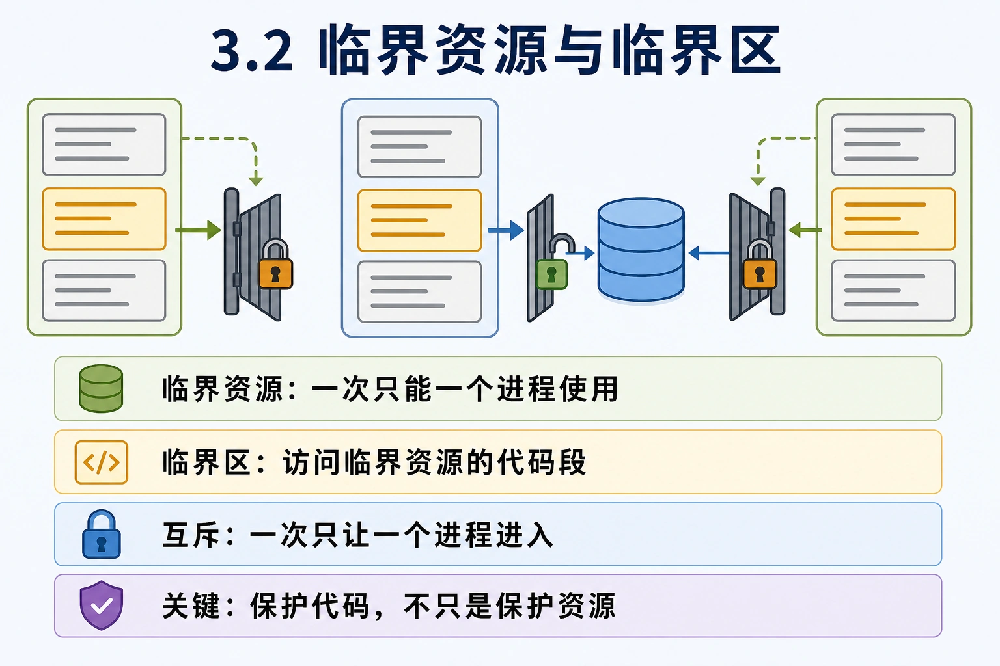
三个核心名词（第 38, 44 页）
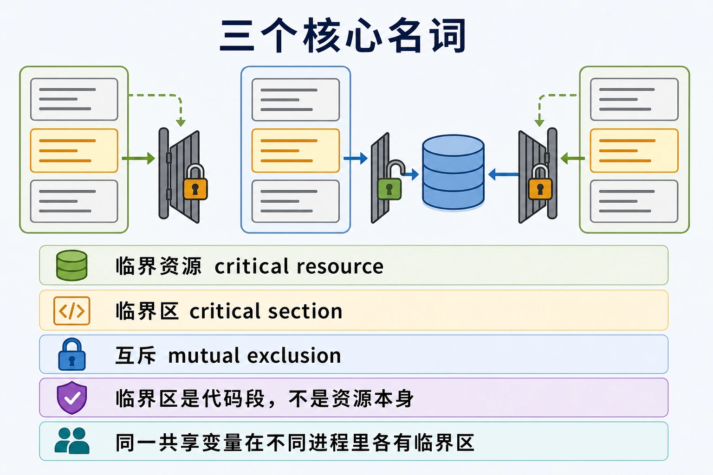
- 临界资源（critical resource）：一次只能被一个进程使用的共享资源。例：共享变量、打印机、磁带机。
- 临界区（critical section / region）：进程中访问临界资源的那段代码。
- 互斥（mutual exclusion）：一次只让一个进程进自己的临界区。
注意：临界区是代码段，不是资源本身。同一个共享变量，在 P1 的代码里有它的临界区，在 P2 的代码里也有它的临界区。
类比：单人厕所是临界资源；进厕所要做的事（开门→关门→上厕所→出门）是临界区；一次只一个人在里面就是互斥。
临界区调度的 4+1 原则（第 45 页，必背）
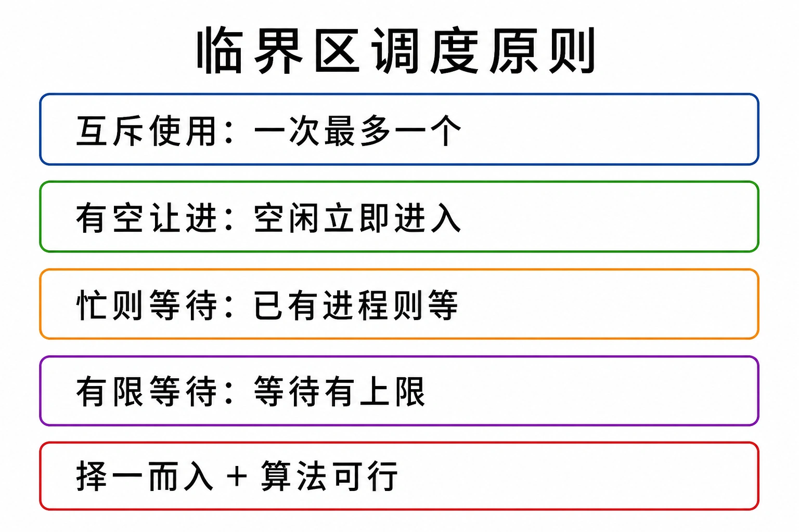
| 原则 | 含义 |
|---|---|
| 互斥使用 | 一次最多一个进程在临界区 |
| 有空让进 | 临界区空闲时，请求进入的应立即进入 |
| 忙则等待 | 已有进程在内，其他进程必须等 |
| 有限等待 | 等待时间有上限，不能无限期等 |
| 择一而入 | 多个等待者中选一个 |
| 算法可行 | 不能要求进程速度有特定关系 |
口诀：互斥使用、有空让进、忙则等待、有限等待。
临界区代码骨架（第 46 页）
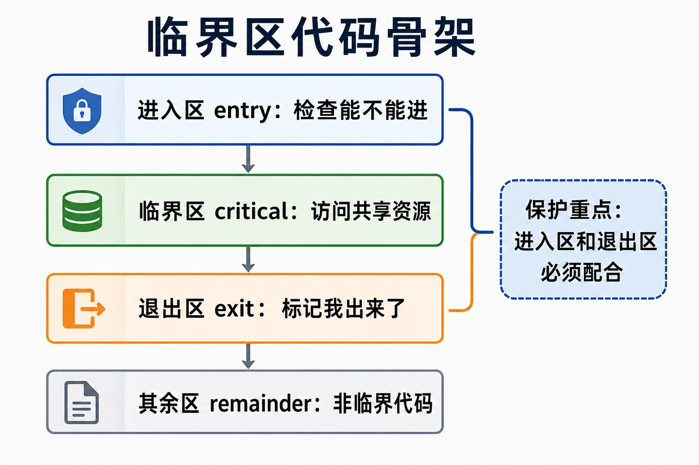
while (1) {
进入区; // entry section: 检查能不能进
临界区; // critical section
退出区; // exit section: 标记我出来了
其余区; // remainder section
}
软件方法的失败尝试（第 47-49 页）
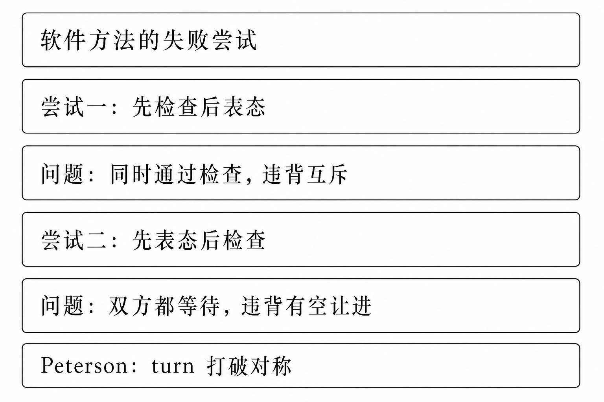
尝试一：双标志，先检查后表态（第 47 页）
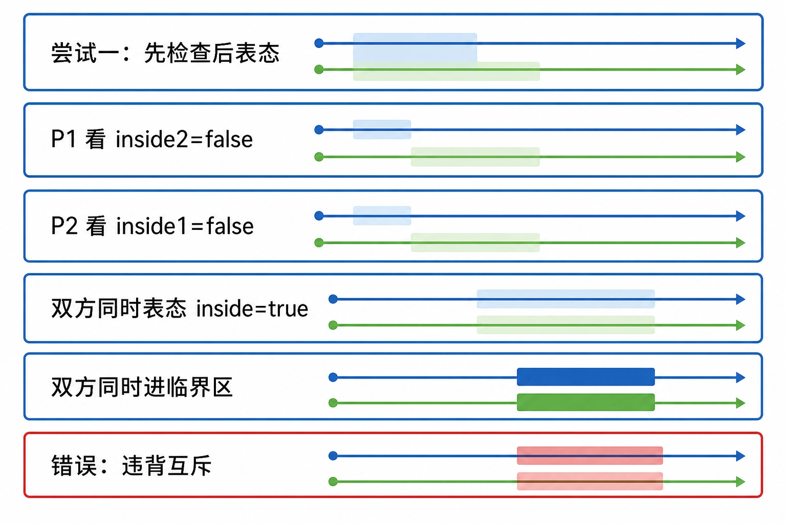
bool inside1 = false, inside2 = false;
P1: while (inside2); // 等
inside1 = true; // 表态
/* 临界区 */
inside1 = false;
P2: while (inside1); // 等
inside2 = true;
/* 临界区 */
inside2 = false;
问题：违背互斥。两进程同时通过 while（都看到对方=false），同时表态进临界区。
尝试二：双标志，先表态后检查（第 48 页）
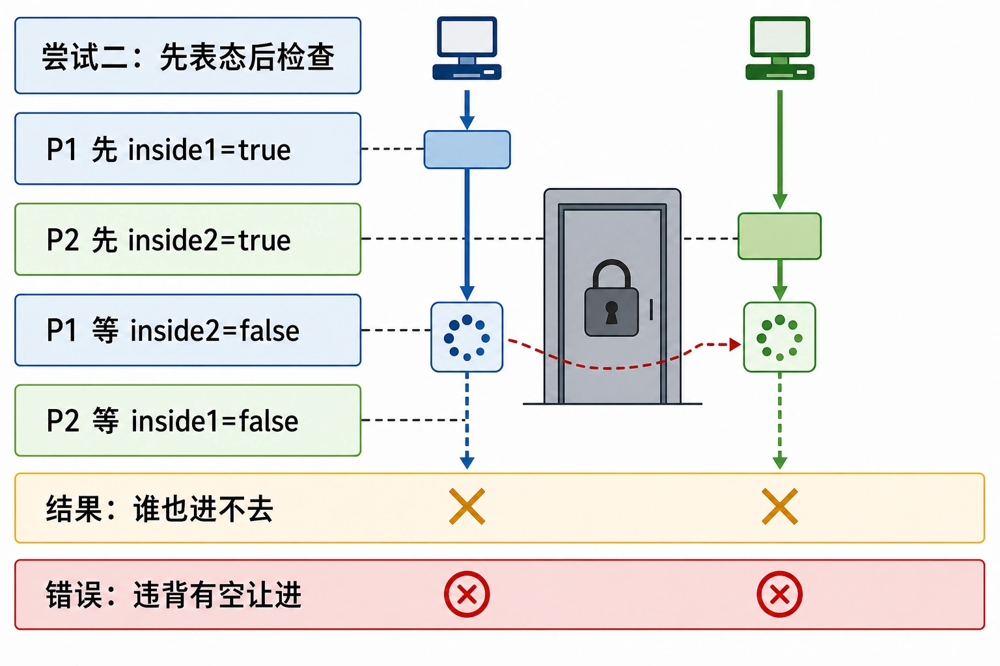
P1: inside1 = true;
while (inside2); // 等
P2: inside2 = true;
while (inside1);
问题：违背”有空让进”。两进程都先表态，结果谁也进不去 → 死锁。
Peterson 算法（第 49 页）：终于对了
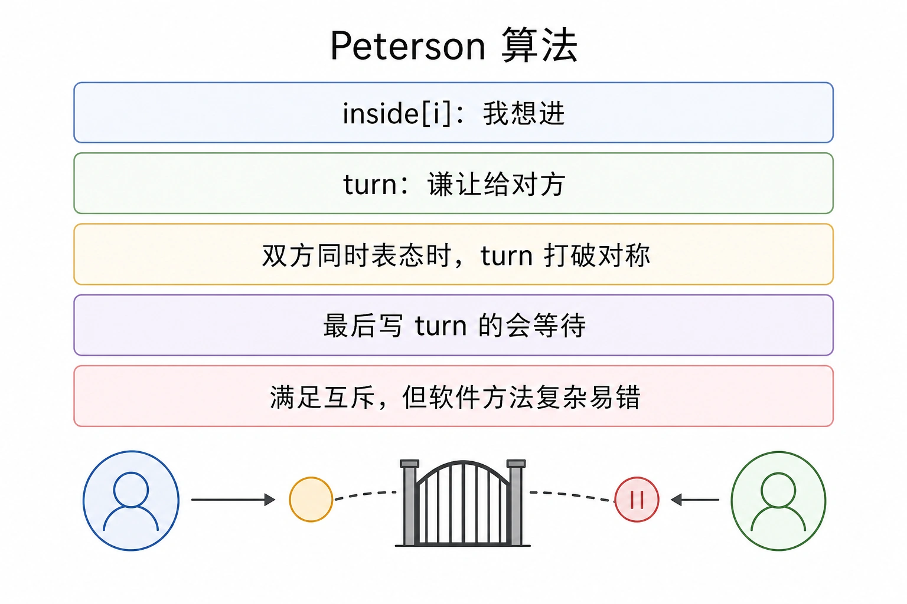
bool inside[2] = {false, false};
int turn;
P0: inside[0] = true;
turn = 1; // 谦让：让对方先
while (inside[1] && turn == 1); // 对方在且让我等才等
/* 临界区 */
inside[0] = false;
P1: inside[1] = true;
turn = 0;
while (inside[0] && turn == 0);
/* 临界区 */
inside[1] = false;
关键：turn 变量打破对称——两个进程同时表态时，最后一个写 turn 的会被卡住，让另一个先进。
但软件方法实现复杂、易错，不是工业方案。下面看硬件方案。
3.3 实现互斥的硬件方法
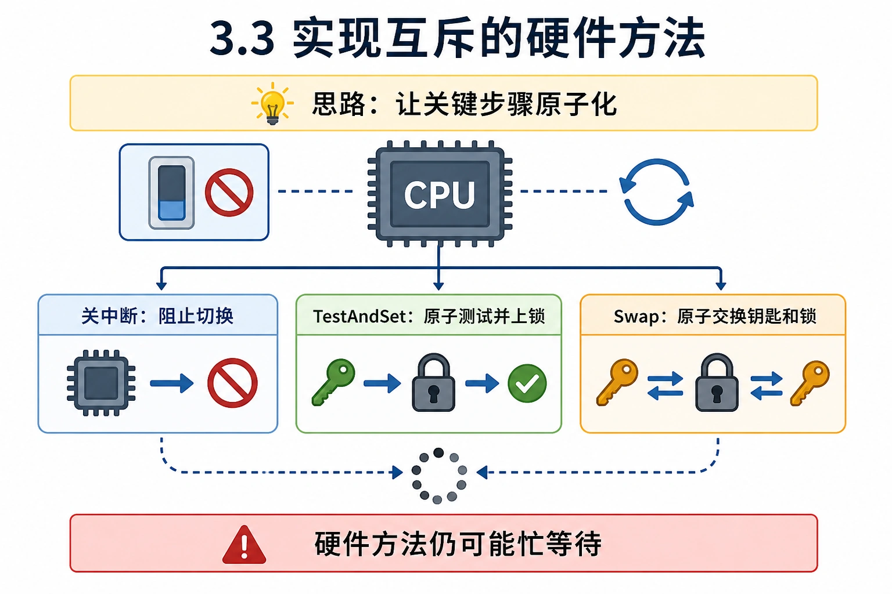
方法一：关中断（第 50-52 页）
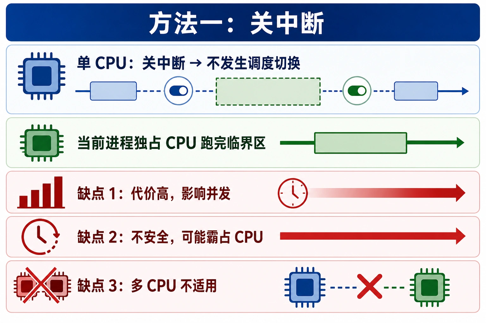
while (1) {
屏蔽中断; // 进入区：不让任何中断打断我
临界区;
恢复中断; // 退出区
其余区;
}
为啥能互斥：单 CPU 下，进程切换必须靠中断（时钟中断、I/O 中断）触发调度。关了中断就不能切换 → 当前进程独占 CPU 跑完临界区。
3 个致命缺点： 1. 代价高：临界区里所有中断都被屏蔽，影响并发性。 2. 不安全：把”关中断”权交给用户进程，普通进程可以借此”霸占” CPU。 3. 不适用多 CPU：进程只能关本 CPU 的中断，别的 CPU 上的进程照样能进临界区。
所以现代 OS 不用这个做用户态互斥（内核短临界区还会用）。
方法二：硬件指令（第 53-59 页）
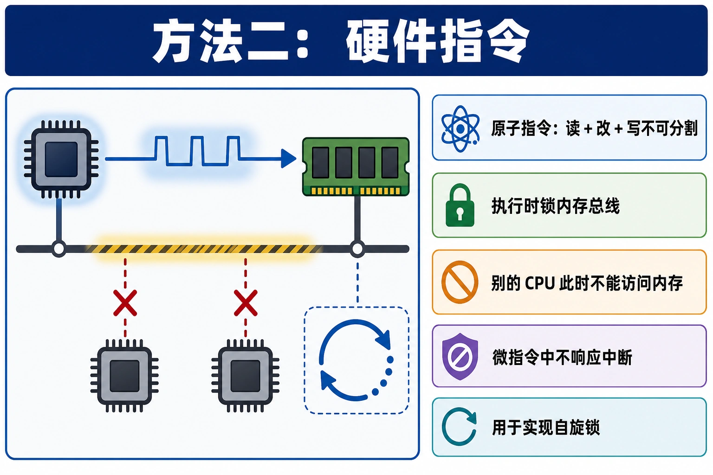
思路：CPU 提供一条原子指令，把”读+改+写”压成不可分割的一步。执行时锁内存总线——别的 CPU 此时不能访问内存。
CPU 中断检测时序（原图见 img-053-006，已转 mermaid）：CPU 在每条指令的”机器周期最后一个 T 状态”才检测中断。微指令执行中不响应中断，所以原子。
flowchart TD
A[取指/执行指令] --> B{机器周期
最后一个 T 状态?}
B -- N --> A
B -- Y --> C{指令结束?}
C -- N --> A
C -- Y --> D{有 INTR?}
D -- N --> A
D -- Y --> E{开中断?}
E -- N --> A
E -- Y --> F[置 INTR F/F]
F --> G[处理中断]
TestAndSet（TS 指令）（第 54-55 页）
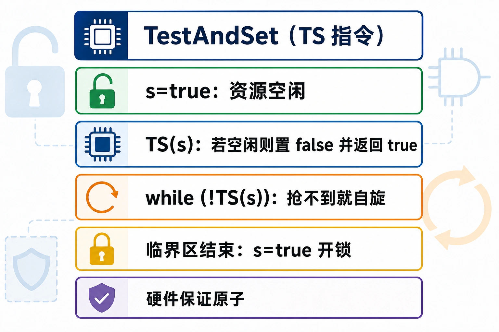
伪代码（注意这是硬件保证原子，C 写法只是表达语义）：
bool TS(bool &x) { // 硬件原子
if (x) { // 如果资源可用（x=true 表示空闲）
x = false; // 占住
return true; // 我抢到了
} else {
return false; // 没抢到
}
}
用 TS 实现 n 进程互斥：
bool s = true; // true=空闲
cobegin
process Pi() { // i=1..n
while (!TS(s)); // 上锁：抢不到就死循环
/* 临界区 */
s = true; // 开锁
}
coend
Swap 指令（对换指令）（第 56-57 页）
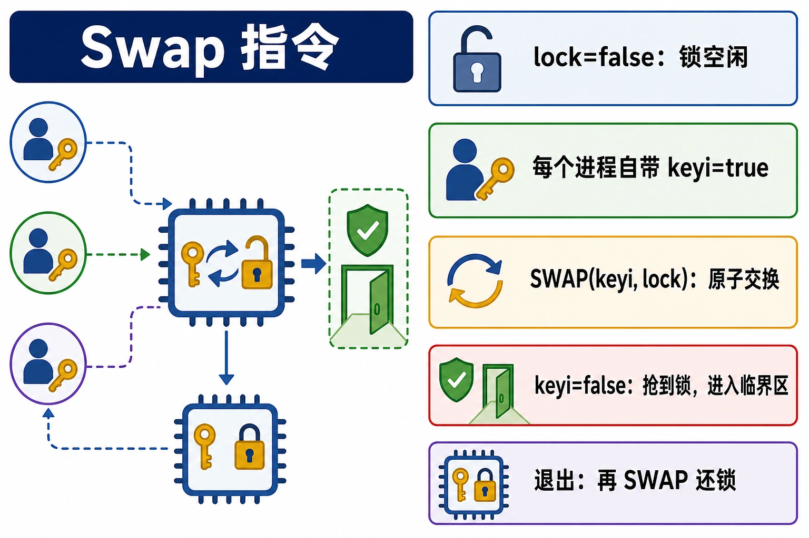
void SWAP(bool &a, bool &b) { // 硬件原子
bool tmp = a; a = b; b = tmp;
}
用 Swap 实现互斥（每个进程自带一把私钥 keyi）：
bool lock = false; // 全局锁
cobegin
process Pi() {
bool keyi = true;
do {
SWAP(keyi, lock); // 把我的 key 和锁交换
} while (keyi); // 换回 true 说明锁原本是 true（被占），继续转
/* 临界区 */
SWAP(keyi, lock); // 还锁：把我的 false 还给 lock
}
coend
理解：lock=false 表示”钥匙在锁孔里没人取”。第一个 SWAP 来的进程把 false 取走（keyi 变 false 跳出循环），同时把自己的 true 放进 lock（表示已被占）。
硬件指令的优劣（第 58-59 页）
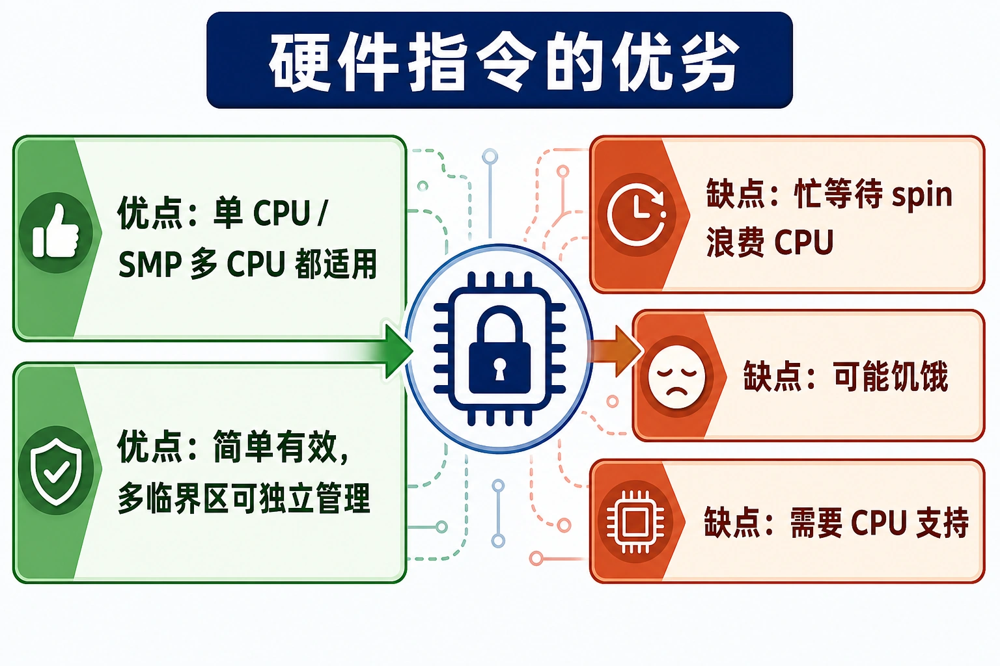
优点： - 单 CPU、SMP 多 CPU 都适用 - 简单有效 - 可以多临界区独立管理（每段一把锁）
缺点： - 忙等待（busy-waiting / spin）：抢不到锁就死循环，浪费 CPU。 - 饥饿：随机从等待者中选下一个，可能某个进程总抢不上。 - 需要 CPU 支持。
→ 引出 3.4：信号量机制能让等待的进程真正睡觉而不是空转。
3.4 信号量机制（Semaphore）
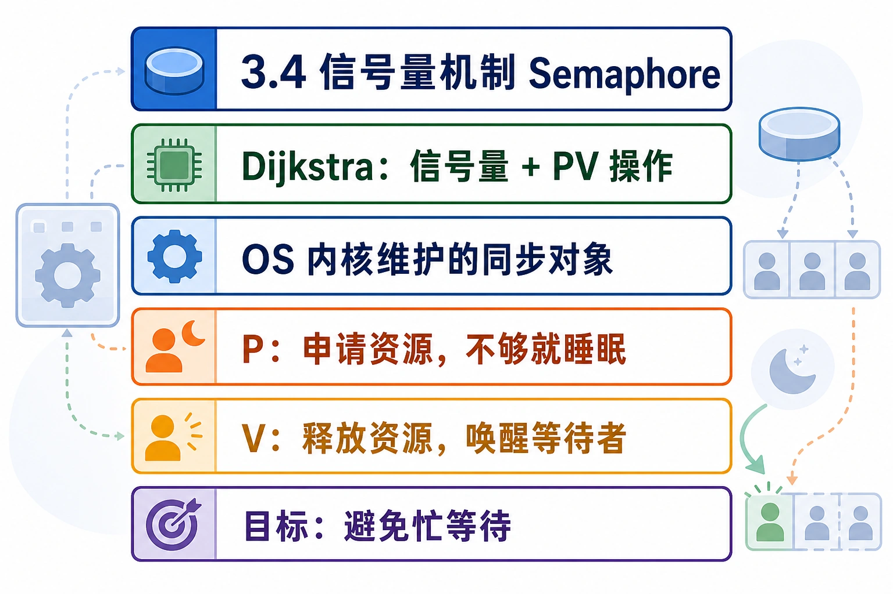
历史与设计动机（第 67 页）
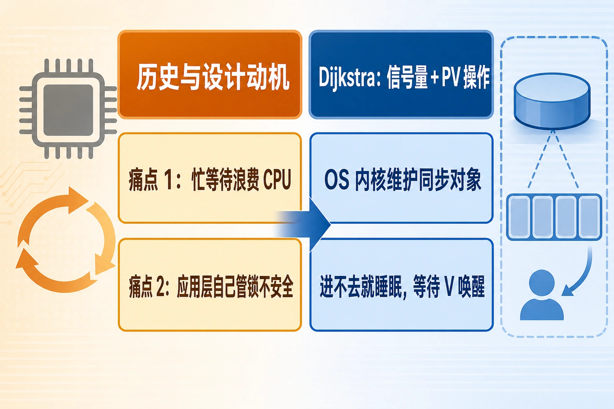
1965 年 Dijkstra（提出”哲学家就餐”那位大佬）提出信号量 + PV 操作，解决两个痛点： 1. 忙等待浪费 CPU； 2. 把”会不会进临界区”的责任丢给应用层不安全。
核心思想：把锁做成 OS 内核维护的对象，进程通过 OS 提供的原语 P/V 来申请/释放，进不去就睡眠进等待队列，被叫醒才回来。
信号量的数据结构（第 68-69 页）
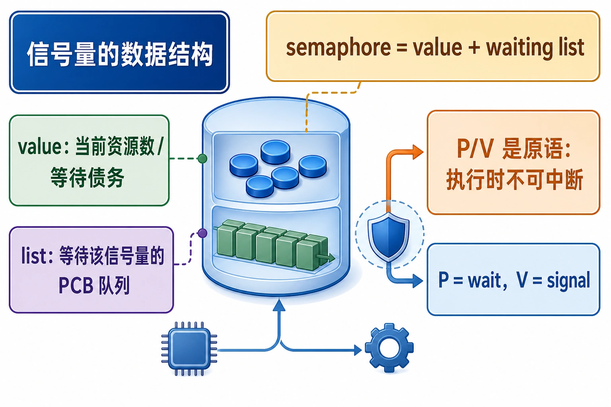
信号量（semaphore）是一种软件资源，本质是带等待队列的整型变量。
typedef struct semaphore {
int value; // 当前值
struct pcb *list; // 等待该信号量的进程队列
};
原语（primitive）：内核中执行时不可被中断的过程。P 操作和 V 操作都是原语。
名字由来：P 来自荷兰语 Proberen（测试），V 来自 Verhogen（增加）。中文也常写成 wait（P）、signal（V）。
信号量分类（第 70 页）
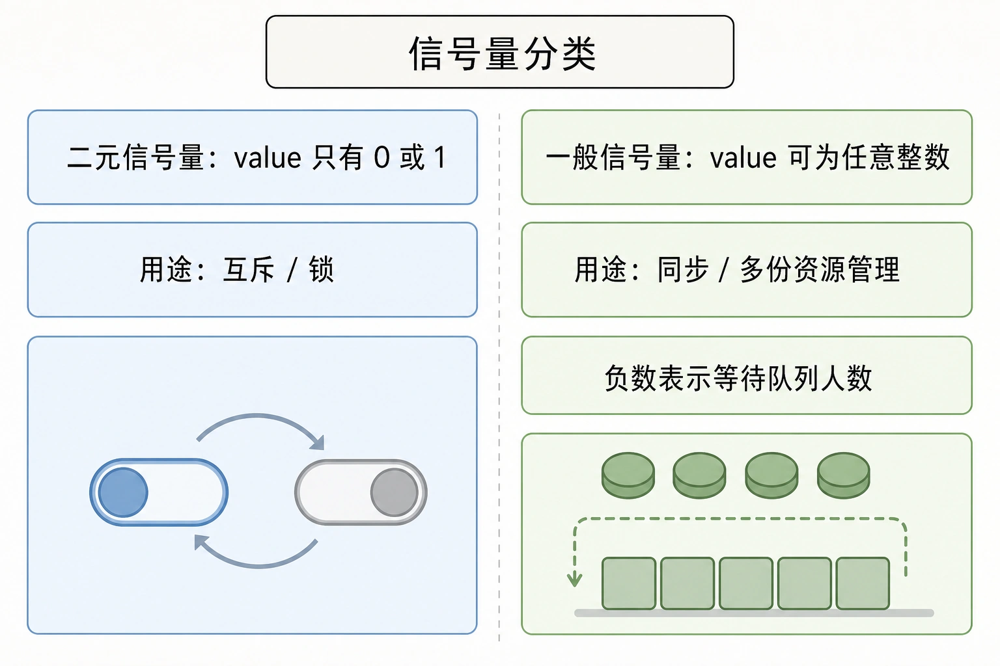
| 类型 | 取值 | 用途 |
|---|---|---|
| 二元信号量 | 仅 0 或 1 | 互斥（=锁） |
| 一般（计数）信号量 | 任何整数（含负数） | 同步、多资源管理 |
一般信号量的 PV 定义（第 71-72 页，必背）
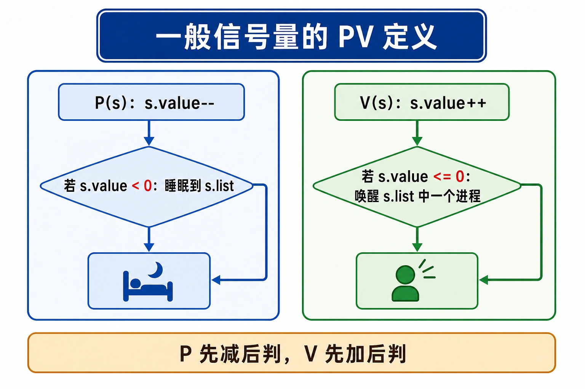
void P(semaphore &s) {
s.value--;
if (s.value < 0) sleep(s.list); // 睡到 list 队列
}
void V(semaphore &s) {
s.value++;
if (s.value <= 0) wakeup(s.list); // 唤醒一个
}
注意符号：
- P 的判断是 < 0（先减后判）
- V 的判断是 <= 0（先加后判，等于 0 说明加之前是负数，有进程在等）
二元信号量的 BP/BV（第 73-74 页）
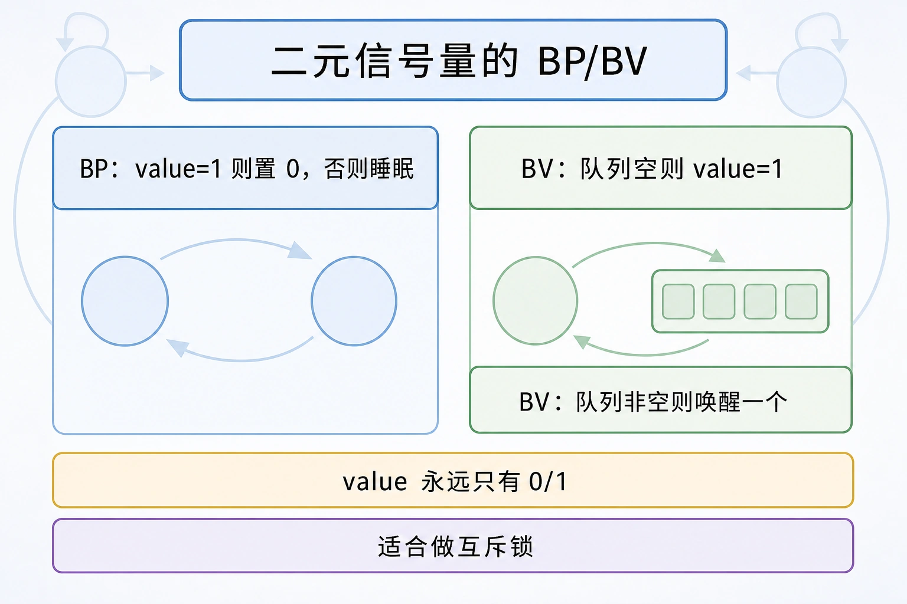
void BP(binary_sem &s) {
if (s.value == 1) s.value = 0;
else sleep(s.list);
}
void BV(binary_sem &s) {
if (s.list is empty) s.value = 1;
else wakeup(s.list);
}
二元信号量的 value 永远只有 0/1，不会出现负数。
信号量的物理意义（第 75-77 页，理解关键）
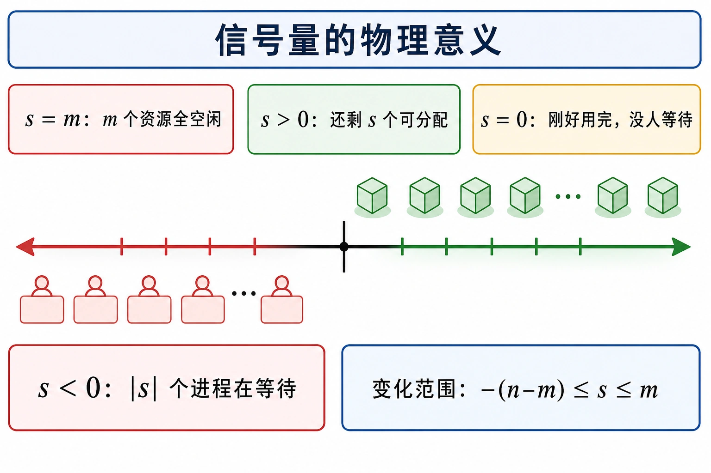
设资源总数 m，进程数 n：
| s.value 取值 | 含义 |
|---|---|
| s = m（初值） | m 个资源全空闲 |
| s > 0 | 还剩 s 个资源可分配 |
| s = 0 | 资源刚好用完，且没人在等 |
| s < 0 | 资源已用完，|s| 个进程在等待队列里 |
变化范围：-(n-m) <= s <= m
例子（第 77 页，4 个进程抢 2 台打印机，s 初值=2）：
| 操作 | s 变化 | 含义 |
|---|---|---|
| P1: P(s) | 2→1 | 拿走 1 台，还剩 1 |
| P2: P(s) | 1→0 | 拿走 1 台，刚好分完 |
| P3: P(s) | 0→-1 | 没了，P3 进等待 |
| P4: P(s) | -1→-2 | P4 也进等待，队列 2 人 |
| P1: V(s) | -2→-1 | P1 还回，唤醒 P3 |
| P2: V(s) | -1→0 | P2 还回，唤醒 P4 |
| P3: V(s) | 0→1 | P3 用完还回 |
| P4: V(s) | 1→2 | P4 用完还回，回到初值 |
记忆口诀： - P = 申请 = -1，不够就睡 - V = 释放 = +1，欠的话就叫醒一个
3.5 PV 操作核心规则（必考）
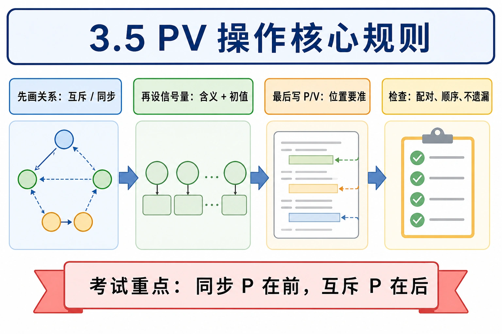
写 PV 解题的标准步骤
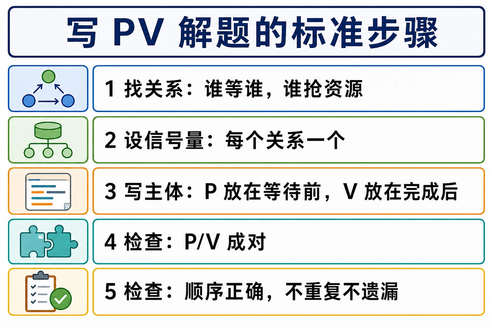
- 找出谁和谁有什么关系：互斥？同步？谁等谁？
- 每个关系定义一个信号量：起好名（mutex/empty/full/…），写明含义和初值。
- 每个进程写主体：在合适位置加 P、V。
- 检查：P/V 必须配对、顺序正确、不重复不遗漏。
三个铁律（第 84 页）
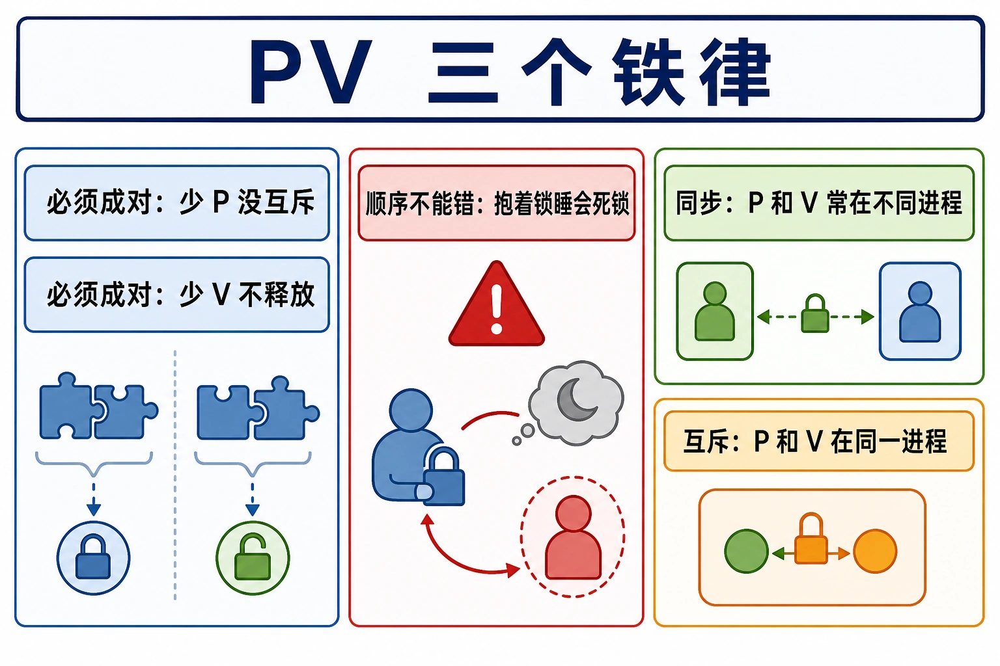
- 必须成对：少 P 没互斥；少 V 资源没释放。
- 顺序不能错：互斥 P 通常在同步 P 之外（详见生产者-消费者）。
- 同一信号量的 P 和 V 一般在不同进程里（同步场景）；互斥场景同一进程里成对。
3.6 PV 解互斥问题
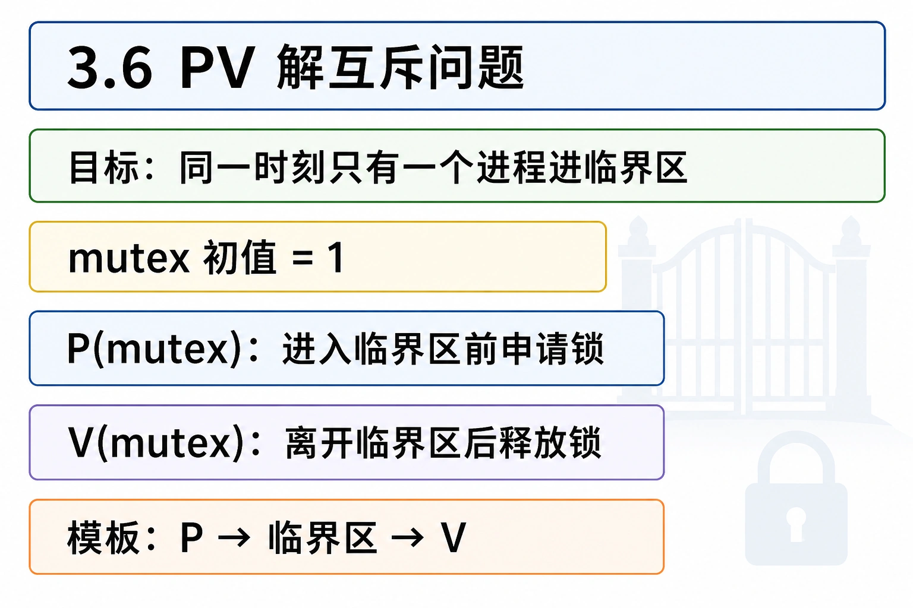
模型（第 78-80 页）
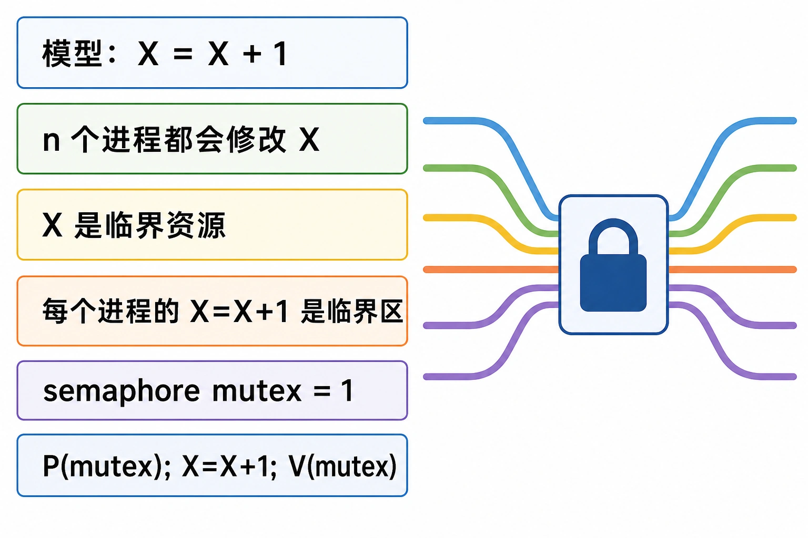
n 个进程都要执行 X = X+1，必须互斥（原图见 img-078-007，已转 mermaid）：
flowchart TD
S[开机] --> P1[进程 P1] & P2[进程 P2] & Pn[进程 Pn]
P1 --> X1[X = X+1]
P2 --> X2[X = X+1]
Pn --> Xn[X = X+1]
X1 --> E[关机]
X2 --> E
Xn --> E
信号量设置：
- mutex：保护临界资源 X
- 初值 = 1（资源 1 份）
模板：
semaphore mutex = 1;
cobegin
process Pi() { // i=1..n
while (1) {
...
P(mutex); // 进入临界区
X = X + 1; // 临界区
V(mutex); // 退出临界区
...
}
}
coend
多份资源的互斥（第 81-83 页）
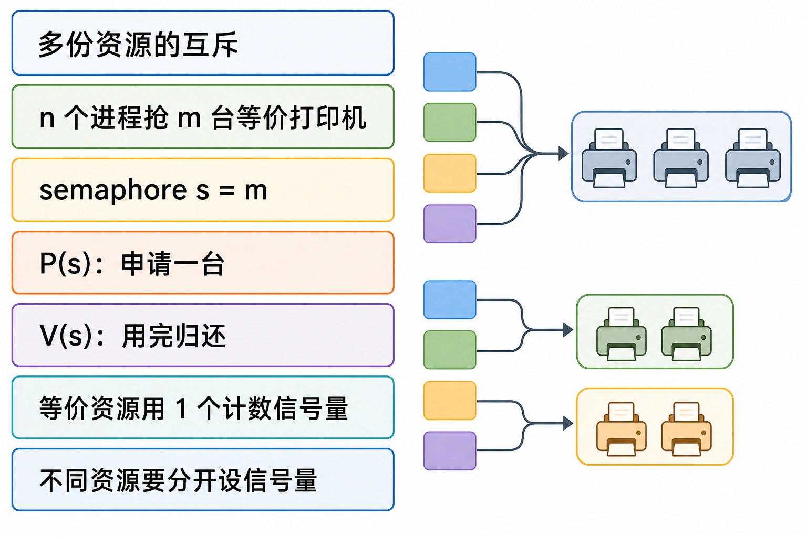
n 个进程抢 m 台打印机（原图见 img-081-008，已转 mermaid）：
flowchart TD
S[开机] --> P1[进程 P1] & P2[进程 P2] & Pn[进程 Pn]
P1 --> R1[申请打印机]
P2 --> R2[申请打印机]
Pn --> Rn[申请打印机]
R1 --> E[关机]
R2 --> E
Rn --> E
semaphore s = m; // 初值 = 资源数
cobegin
process Pi() {
P(s); // 申请一台打印机
申请打印机使用;
V(s); // 用完归还
}
coend
变化范围：s ∈ [-(n-m), m]
关键：只要资源互相等价（比如 m 台一模一样的打印机），用 1 个计数信号量就够；如果是不同资源（打印机+磁带机），要 2 个独立信号量。
3.7 PV 解同步问题
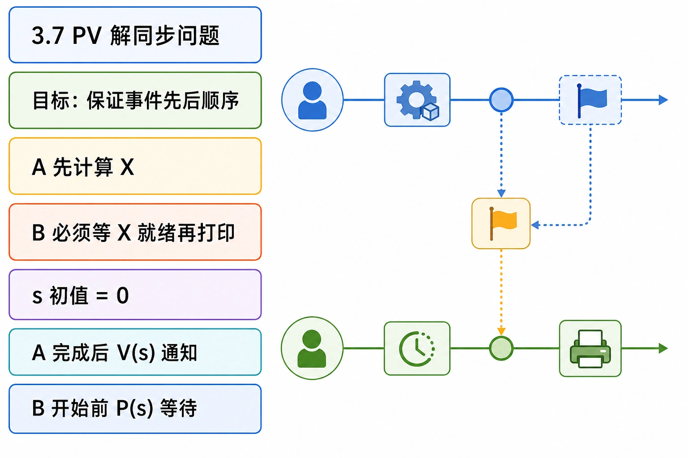
模型（第 85-86 页）
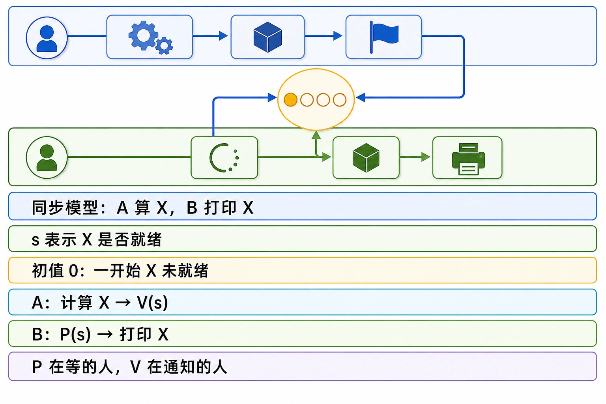
经典场景（原图见 img-085-009，已转 mermaid）：进程 A 计算出 X，进程 B 打印 X。B 必须等 A 算完才能开始。
flowchart TD
S[开始] --> A[进程 A: 计算 X]
A --> X((X 就绪))
X --> B[进程 B: 打印 X]
B --> E[结束]
信号量设置：
- s：表示”X 是否就绪”
- 初值 = 0（一开始 X 还没算出来）
模板：
semaphore s = 0;
cobegin
process A() {
计算 X;
V(s); // 我算完了，通知 B
}
process B() {
P(s); // 等 A 算完
打印 X;
}
coend
互斥 vs 同步的初值差异（极易考）
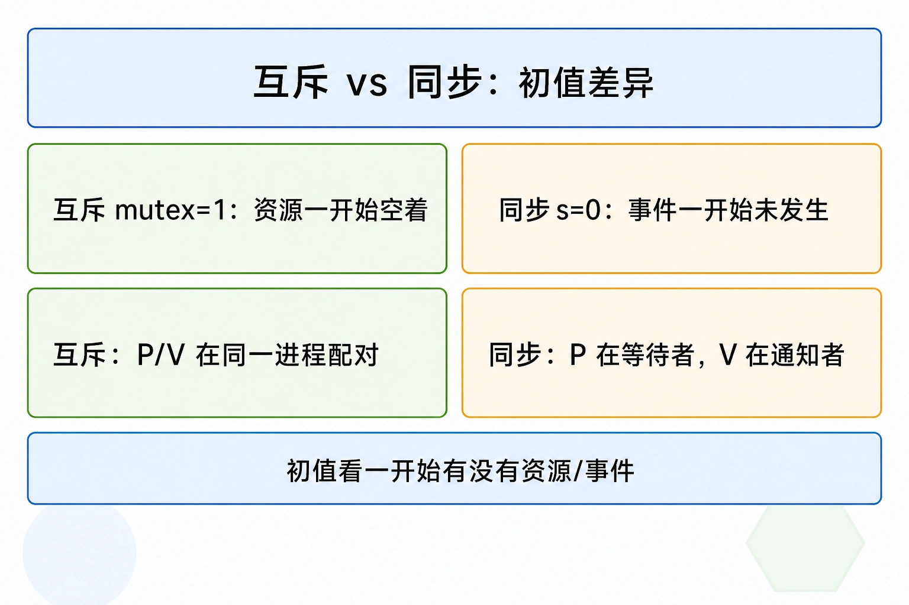
| 类型 | 初值 | P 谁写、V 谁写 |
|---|---|---|
| 互斥（mutex=1） | 1 | 同一个进程里 P-V 配对 |
| 同步（s=0） | 0 | P 在”等的人”，V 在”通知的人”，分布在不同进程 |
记忆： - 互斥锁初值=1 → “厕所默认空着，第一个进的人 P 一下，出来 V 一下” - 同步信号初值=0 → “等的人先 P（睡过去），通知的人 V（叫醒）”
3.8 经典同步问题（前半）：哲学家 + 生产者-消费者
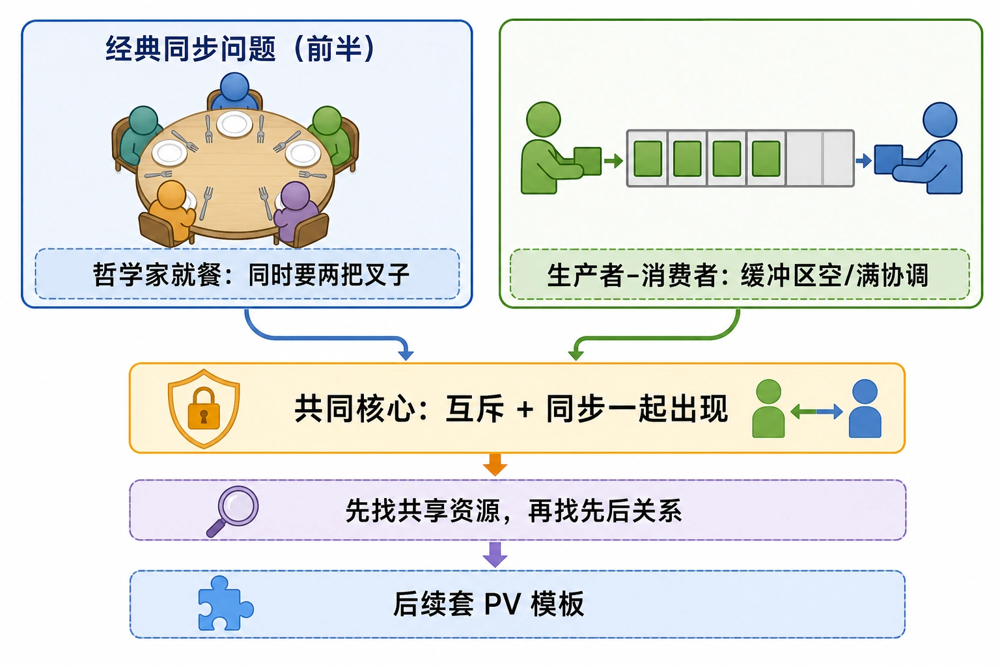
哲学家就餐问题（第 87-91 页，过渡题）
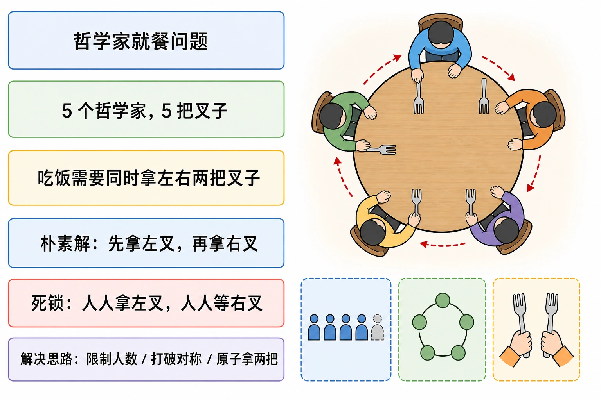
问题：5 个哲学家围桌坐，桌中央通心面，每两人之间一把叉子（共 5 把）。哲学家思考-饿-吃循环。吃需要同时拿到左右两把叉子。
朴素解（第 89 页）— 会死锁！
semaphore fork[5];
for (int i=0; i<5; i++) fork[i] = 1;
cobegin
process philosopher_i() { // i=0..4
while (1) {
think();
P(fork[i]); // 拿左叉
P(fork[(i+1)%5]); // 拿右叉
eat();
V(fork[i]);
V(fork[(i+1)%5]);
}
}
coend
死锁场景：5 个人同时拿左叉 → 全拿到了 → 全等右叉 → 永远等 → 全饿死。
避免死锁的 3 种方案（第 90 页）： 1. 至多 4 个同时吃（多加一个计数信号量 room=4）； 2. 奇数号先拿左、偶数号先拿右（打破对称）； 3. 同时拿到两把才吃（原子化双拿，要互斥保护）。
该问题完整解和详细分析在后半，本节先有印象即可。
生产者-消费者问题（第 61-66 页 + 92-99 页，本章最重要）
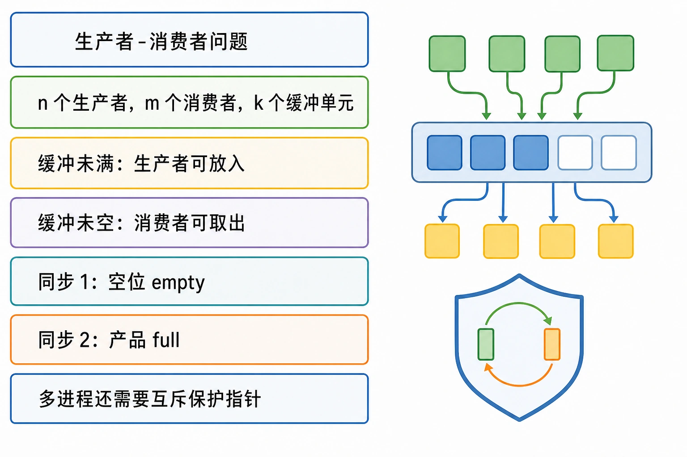
问题表述（第 62 页）：n 个生产者、m 个消费者、k 个缓冲单元。 - 缓冲未满 → 生产者可投放 - 缓冲未空 → 消费者可取走
单缓冲示意（原图见 img-092-011，已转 mermaid）：
flowchart LR
P[生产者 P] -->|放入| Buf((buffer))
Buf -->|取出| C[消费者 C]
多缓冲池环形示意（原图见 img-095-012，已转 mermaid）：
flowchart LR
subgraph Producers[生产者侧]
P1[P1] --> P0
P2[P2] --> P0
Pn[Pn] --> P0
end
subgraph Ring[环形缓冲池]
P0[空仓头指针 P0] -.放入.-> R((环形 buffer))
R -.取出.-> C0[产品链头指针 C0]
end
subgraph Consumers[消费者侧]
C0 --> C1[C1]
C0 --> C2[C2]
C0 --> Cm[Cm]
end
- 生产者关于 P0 头指针互斥
- 消费者关于 C0 头指针互斥
- 生产者-消费者关于”空仓”和”产品”两个同步
错误版本（第 64-66 页，没用 PV）
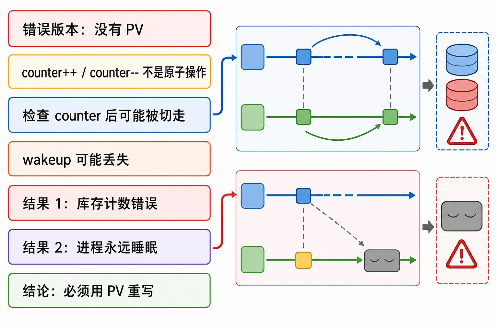
教材先给出一版用 sleep/wakeup 但没保护 counter的代码：
process producer() {
while (1) {
生产 nextp;
if (counter == k) sleep(producer);
buffer[in] = nextp;
in = (in+1) % k;
counter++;
if (counter == 1) wakeup(consumer);
}
}
process consumer() {
while (1) {
if (counter == 0) sleep(consumer);
nextc = buffer[out];
out = (out+1) % k;
counter--;
if (counter == k-1) wakeup(producer);
消耗 nextc;
}
}
问题：
1. counter++ 和 counter-- 不原子 → 结果不唯一（第 31 页同款 bug）；
2. 检查 counter 和 sleep 之间可能被切走 → 唤醒信号丢失 → 永远等待。
结论：必须用 PV 重写。
单生产者-单消费者，单缓冲（第 93 页）
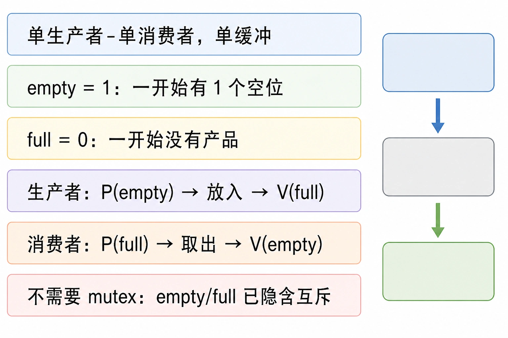
信号量设置：
- empty = 1：表示”缓冲区可放产品的空位数”，初值 1（一开始有 1 个空位）
- full = 0：表示”缓冲区里产品数”，初值 0（一开始没产品）
- 不需要 mutex！只有 1 生 1 消，且 empty/full 已经隐式互斥。
int B;
semaphore empty = 1; // 空位数
semaphore full = 0; // 产品数
cobegin
process producer() {
while (1) {
produce();
P(empty); // 申请 1 个空位
append to B;
V(full); // 通知消费者：有产品了
}
}
process consumer() {
while (1) {
P(full); // 等产品
take from B;
V(empty); // 通知生产者：又空了一格
consume();
}
}
coend
关键理解： - empty 和 full 是同步信号量（生-消之间协调），不是互斥锁； - 它们的和恒等于缓冲区总容量（这里 1+0=1）。
多生产者-多消费者，多缓冲（第 94-99 页，必考）
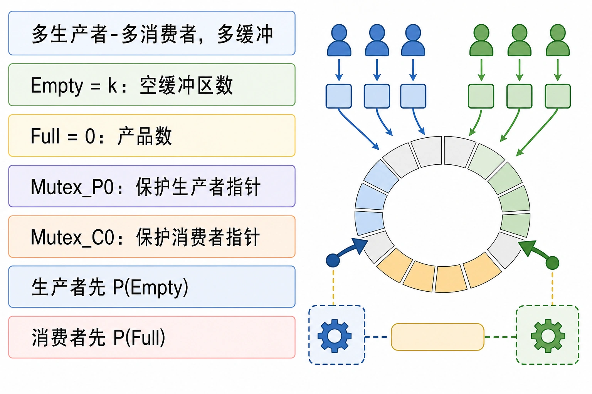
环形缓冲池：多生产者左侧、多消费者右侧（图见上节 mermaid）。
多出来的复杂度： - 多个生产者同时移动空仓头指针 P0 → 互斥 - 多个消费者同时移动产品链头指针 C0 → 互斥 - 4 个临界资源：空位池、产品池、空仓指针、产品指针
信号量设置（4 个）：
- Empty = k：空缓冲区数（同步）
- Full = 0：产品数（同步）
- Mutex_P0 = 1：生产者间互斥（互斥）
- Mutex_C0 = 1：消费者间互斥（互斥）
完整代码：
item B[k];
semaphore Empty = k;
semaphore Full = 0;
semaphore Mutex_P0 = 1;
semaphore Mutex_C0 = 1;
int in = 0, out = 0;
cobegin
process producer_i() {
while (1) {
produce();
P(Empty); // ① 同步：等空位
P(Mutex_P0); // ② 互斥：抢生产者锁
append to B[in];
in = (in+1) % k;
V(Mutex_P0); // 释放生产者锁
V(Full); // 通知消费者
}
}
process consumer_j() {
while (1) {
P(Full); // ① 同步：等产品
P(Mutex_C0); // ② 互斥：抢消费者锁
take from B[out];
out = (out+1) % k;
V(Mutex_C0);
V(Empty); // 通知生产者
consume();
}
}
coend
极端重要：P 顺序不能颠倒！（第 98 页）
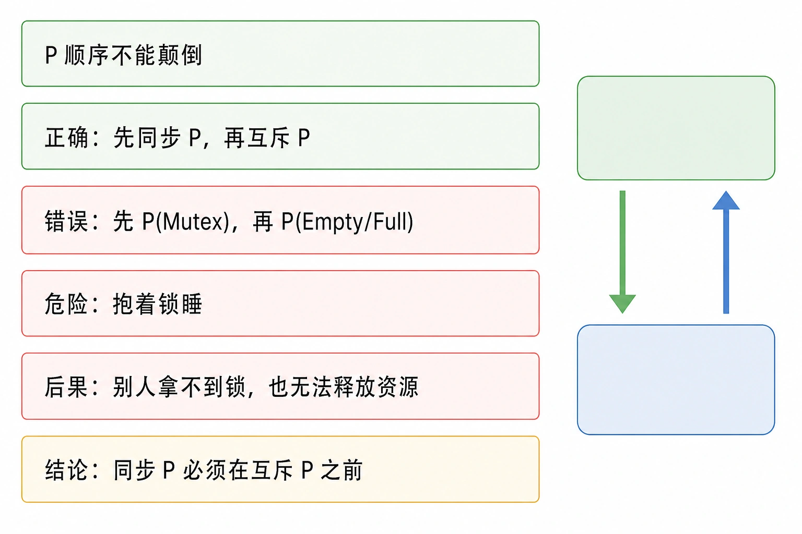
错误顺序：先 P(Mutex)，再 P(Empty)/P(Full) → 死锁！
死锁推演（Empty=0, Full=k 的时刻）：
| 步骤 | 生产者 | 消费者 |
|---|---|---|
| 1 | P(Mutex_P0) → 抢到生产者锁 | |
| 2 | P(Empty) → 0→-1，睡 | |
| 3 | P(Mutex_C0) → 抢到消费者锁 | |
| 4 | P(Full) → 取走产品（OK） | |
| 5 | V(Mutex_C0) | |
| 6 | V(Empty) → 唤醒生产者 | |
| 7 | 生产者醒，继续… |
等等，这种情况还能解？我们换 Empty=k, Full=0 的反例：
| 步骤 | 消费者 | 生产者 |
|---|---|---|
| 1 | P(Mutex_C0) → 抢到消费者锁 | |
| 2 | P(Full) → 0→-1，睡 | |
| 3 | P(Mutex_P0) → 抢生产者锁 | |
| 4 | P(Empty) → 拿空位（OK） | |
| 5 | append, V(Mutex_P0), V(Full) → 唤醒消费者 | |
| 6 | 消费者醒，继续 |
也能跑通？真死锁是这样：考虑 1 个 Mutex（合并 P0/C0 用同一把锁）的简化版，Empty=0, Full=k： - 生产者：P(Mutex) → 抢锁 → P(Empty) → 0→-1 睡（抱着锁睡） - 消费者：P(Mutex) → 锁被占 → 睡 - 消费者本来能 V(Empty) 唤醒生产者，但消费者拿不到锁就走不到 V(Empty) → 死锁。
结论：同步 P 必须在互斥 P 之前。原则——抱着锁睡 = 死锁。
信号量变化范围（第 99 页）
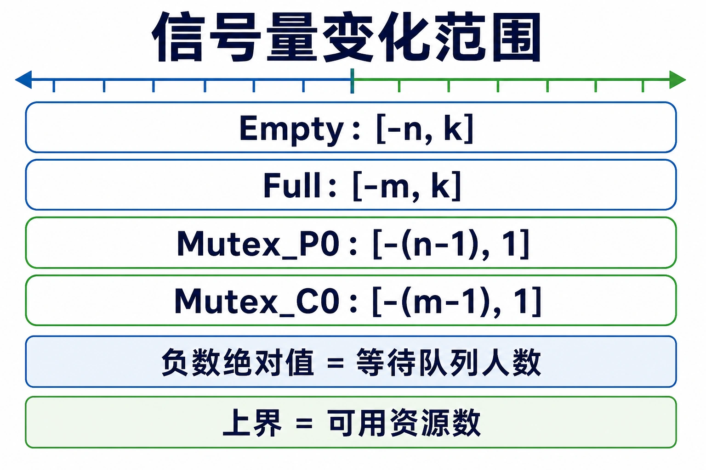
| 信号量 | 范围 |
|---|---|
| Empty | [-n, k] |
| Full | [-m, k] |
| Mutex_P0 | [-(n-1), 1] |
| Mutex_C0 | [-(m-1), 1] |
理解：互斥锁最多挤 (n-1) 个生产者在等（已有 1 个进了临界区）；同步信号量最多 n 个生产者在等空位、m 个消费者在等产品。
9. 前半部分速查表
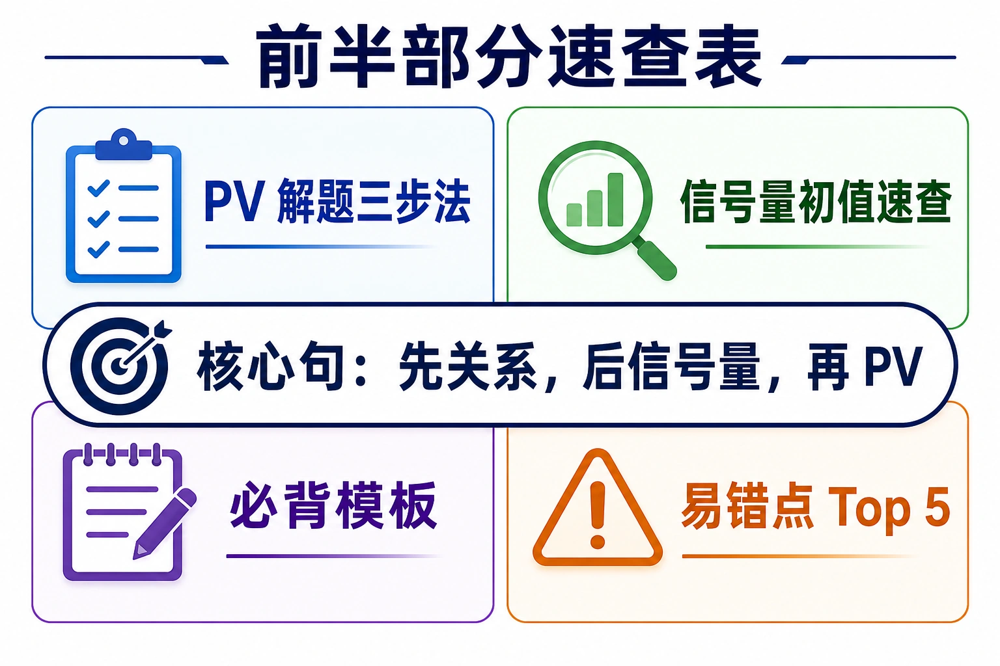
PV 解题三步法
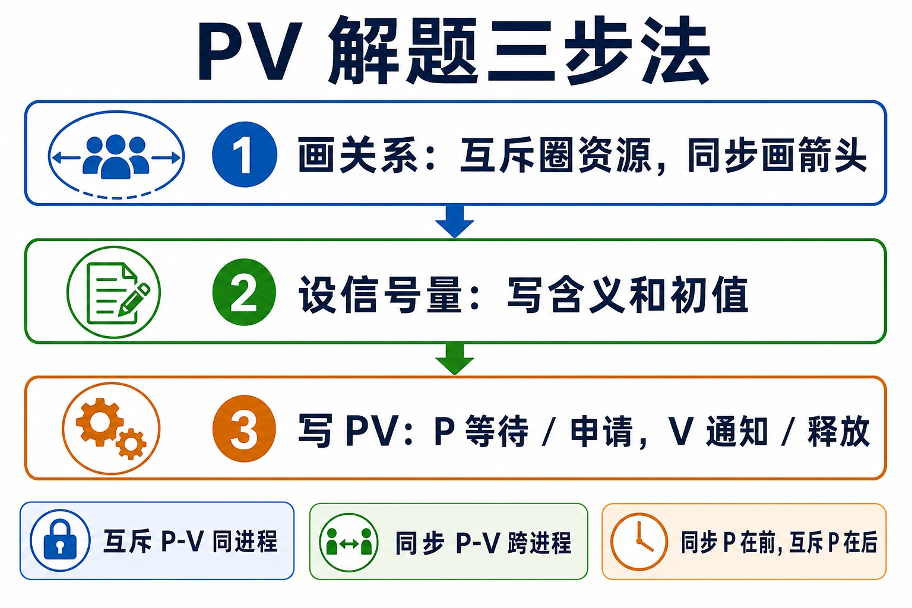
- 画关系：互斥（圈共享资源）/ 同步（画依赖箭头）
- 设信号量：每个互斥关系 1 个 mutex（初值=资源数 m），每个同步关系 1 对（初值看”一开始有没有”）
- 写 PV：互斥锁 P-V 同进程；同步信号 P-V 跨进程；同步 P 在前，互斥 P 在后
信号量初值速查
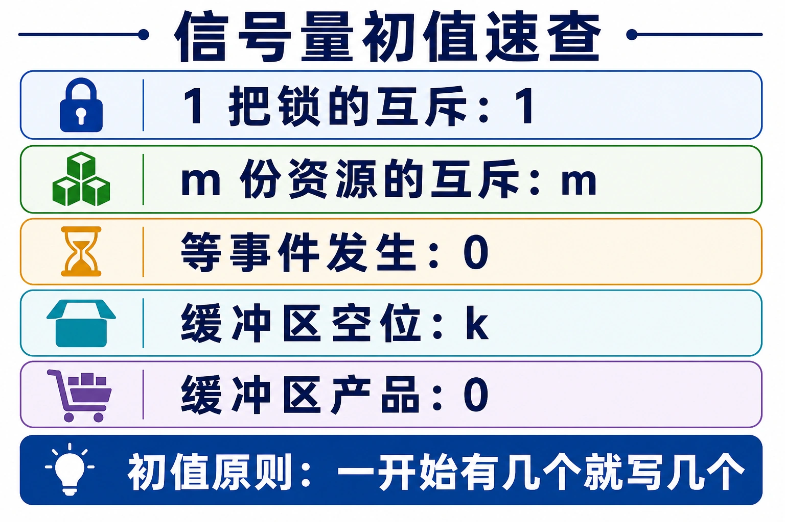
| 场景 | 初值 |
|---|---|
| 1 把锁的互斥 | 1 |
| m 份资源的互斥 | m |
| 同步：等”事件发生” | 0 |
| 缓冲区”空位”信号量 | k（缓冲大小） |
| 缓冲区”产品”信号量 | 0 |
必背模板
互斥：
semaphore mutex = 1;
P(mutex); 临界区; V(mutex);
同步（A 算 X，B 用 X）：
semaphore s = 0;
A: 算 X; V(s);
B: P(s); 用 X;
单生产单消费单缓冲：
semaphore empty = 1, full = 0;
P: produce; P(empty); 放; V(full);
C: P(full); 取; V(empty); consume;
多生多消多缓冲（4 个信号量）：
semaphore Empty=k, Full=0, Mutex_P=1, Mutex_C=1;
P_i: produce; P(Empty); P(Mutex_P); 放; V(Mutex_P); V(Full);
C_j: P(Full); P(Mutex_C); 取; V(Mutex_C); V(Empty); consume;
易错点 Top 5
- ❌ 把同步 P 放在互斥 P 后面 → 抱着锁睡 → 死锁
- ❌ 互斥 mutex 初值写成 0（应为 1 或 m）
- ❌ 同步信号量初值写成 1（应为 0，除非”已有产品”）
- ❌ 漏写 V → 资源永远不释放 → 后续进程全等待
- ❌ 单缓冲单生单消时多加了 mutex（不需要，empty/full 已隐含互斥）
10. 待澄清
- 教材第 64-66 页的错误版生产者-消费者：sleep/wakeup 实现到底是怎么”丢信号”的？是否应该追到具体反例？
- Peterson 算法的正确性证明：教材一笔带过，没给为啥 turn 变量能打破对称。后半或后续课程是否补？
- 二元信号量 vs 互斥锁：现代 OS（如 Linux pthread mutex）和教材里的 binary_semaphore 实现细节差异多大？后半是否会讲？
- 多缓冲的 in/out 指针变化：教材代码里 in 和 out 各自只被一类进程修改（in 仅生产者、out 仅消费者），所以严格说不需要 Mutex_P0 保护 in？这里教材是把”分配空仓+移动指针”打包当作临界区，含义略宽。
- 图 img-053-006（CPU 中断检测时序）原文配字描述较简略，本笔记按”指令周期末检测中断”理解，与一般 OS 教材一致，但可能与具体微架构（M68000）有出入。
接 part1。前半已覆盖：临界区、PV、生产者-消费者、哲学家。 后半压轴：读者-写者、理发师、管程、进程通信、死锁、银行家算法。
总览（一句话能说清的故事）
后半页的整体逻辑： 1. 更难的同步问题（读者-写者 / 理发师）— 让你练 PV 嵌套 + 计数器配合互斥锁的套路。 2. 管程（Monitor）— 信号量太散乱，容易写错。把”互斥+条件等待”封装到一个模块里，编译器/运行时帮你保证一次只有一个进程进。 3. 进程通信（IPC）— 共享内存+PV 是低层；高层是消息传递（直接/间接）、管道、信箱。 4. 死锁（压轴）— 资源竞争 + 推进顺序不当 → 四必要条件 → 三种处理方法（预防/避免/检测）→ 银行家算法是必考计算题。
3.9 读者-写者问题（Readers-Writers）
日常类比：图书馆里很多人可以同时读同一本书（读不冲突），但写书时谁都不许碰（写者要独占）。
问题描述（p100）
两组并发进程共享一个文件 F： - 多个读者可以同时读； - 写者必须独占（写时其他读/写都得等）； - 写者写完前已有的读/写都得退出。
模型图（p101，原图见 img-101-013，已转 mermaid）
flowchart LR
subgraph Readers[阅读者们]
R1[R1] --> BUF
R2[R2] --> BUF
Rm[Rm] --> BUF
end
BUF((BUF))
subgraph Writers[写入者们]
BUF --> W1[W1]
BUF --> W2[W2]
BUF --> Wn[Wn]
end
- 阅读者关于 ReadCount 互斥（计数读者数）
- 写入者关于 BUF 互斥（独占写）
- 阅读者和写入者关于 BUF 互斥（读时不能写）
三层关系： - 读者之间不互斥（可并发读）； - 写者之间互斥（独占写）； - 读者群与写者之间互斥（一组进读，另一组就得等）。
信号量设置（p102）
int ReadCount = 0; // 当前正在读的人数
semaphore Mutex_ReadCount = 1; // 保护 ReadCount 的互斥锁
semaphore Mutex_BUF = 1; // 文件本身的访问锁
关键直觉：
- ReadCount 是”有几个人在读书”的计数器，多人改它要互斥（用 Mutex_ReadCount）。
- Mutex_BUF 是”占着图书馆”的锁——第一个读者进来要去抢这个锁（替整个读者群占着），最后一个读者走时才放。中间的读者只改计数器、不动 BUF 锁。
完整 PV 解（p103）— 读者优先版
process reader_i() {
while (1) {
/* 阅读者计数器登记 */
P(Mutex_ReadCount);
readcount++;
/* 第一个阅读者去申请 BUF（替整组读者占锁）*/
if (readcount == 1)
P(Mutex_BUF);
V(Mutex_ReadCount);
/* 读文件 */;
/* 阅读者计数器注销 */
P(Mutex_ReadCount);
readcount--;
/* 最后一个阅读者去释放 BUF */
if (readcount == 0)
V(Mutex_BUF);
V(Mutex_ReadCount);
sleep(10);
}
}
process writer_j() {
while (1) {
P(Mutex_BUF);
/* 写文件 */;
V(Mutex_BUF);
sleep(10);
}
}
信号量变化范围（p104）
Mutex_ReadCount: [-(m-1), 1]— 最坏情况 m 个读者同时申请，1 个进入临界区，剩 m-1 个排队。Mutex_BUF: [-n, 1]— n 个写者+整组读者(算 1)都可能在排队。
踩坑提醒（写者饥饿）
这版是读者优先：只要不断有读者来，写者会被无限延迟（饥饿）。要让写者公平，需要更复杂的”读者写者公平版/写者优先版”——本课件没展开，考试通常考这个读者优先版。
3.10 哲学家进餐问题补充（p90-91）
前半已经讲过基础版的死锁解，这里只补正确解法的关键。
三种避免死锁的办法（p90）
- 至多允许 4 个哲学家同时吃（5 把叉子，限制申请数 → 必有 1 人能拿到 2 把）；
- 奇偶号取叉顺序不同（破坏循环等待——奇号先左后右，偶号先右后左）；
- 必须能同时拿到两把才拿，否则一把都不拿（破坏部分分配条件）。
一种正确解（p91）— 限制为 4 个哲学家
semaphore fork[5];
for (int i = 0; i < 5; i++) fork[i] = 1;
cobegin
process philosopher_i() { // i = 0,1,2,3 (只允许 4 个！)
while (true) {
think();
P(fork[i]);
P(fork[(i+1) % 5]);
eat();
V(fork[i]);
V(fork[(i+1) % 5]);
}
}
coend
注：另两种解法（奇偶号顺序、原子拿两把）的伪代码课件未给，考试要会复述思路。
3.11 睡眠理发师问题（Sleeping Barber）
日常类比：理发店有 1 位理发师 + 1 把理发椅 + N 把候客椅。没顾客就睡觉，顾客来了就叫醒理发师。
问题描述（p105）
- 理发师 1 个、理发椅 1 把、候客椅 N 把；
- 没顾客 → 理发师在椅子上睡觉；
- 顾客来 → 没人就叫醒理发师；理发师在剪 → 有空候客椅就坐下等，没空就走。
信号量设置（p106）
int waiting = 0; // 等候顾客数
int CHAIRS = N; // 候客椅总数
semaphore customers = 0; // 等待理发的顾客数（理发师睡在这上面）
semaphore barbers = 0; // 准备好理发的理发师数（顾客等在这上面）
semaphore mutex = 1; // 保护 waiting
直觉：
- customers 像”顾客取号机”：顾客 +1，理发师 -1（没号就睡）。
- barbers 像”叫号机”：理发师就绪 +1，顾客 -1（理发师没空就坐等）。
完整 PV 解（p107-108）
process barber() {
while (true) {
P(customers); // 没顾客就睡（阻塞在这里）
P(mutex);
waiting--; // 等候顾客数 -1
V(barbers); // 准备好理发了
V(mutex);
cut_hair(); // 临界区外理发
}
}
process customer_i() {
P(mutex);
if (waiting < CHAIRS) { // 有空椅子吗？
waiting++;
V(customers); // 叫醒理发师（或排队）
V(mutex);
P(barbers); // 等理发师准备好
get_haircut();
} else {
V(mutex); // 满了，走人
}
}
踩坑提醒
waiting++必须在V(customers)之前——否则理发师可能先醒过来去waiting--，结果减成负数。- 顾客拿到
mutex后判断 + 修改 + 释放customers，必须整体在 mutex 临界区内。
3.12 管程（Monitor，3.4）— 高级同步机制
为什么要管程（p110）
信号量功能强大但散在各进程里，容易写错（漏掉 V、PP 顺序错就死锁）。管程把”互斥 + 条件等待”封装成一个模块/类，编译器或运行时保证调用安全。
管程定义（p110）
- 管程 = 过程 + 变量 + 数据结构 组成的特殊模块/软件包；
- 进程只能通过管程内的过程访问其内部数据，不能直接访问；
- 任一时刻最多只有一个活跃进程在管程内 → 互斥由管程本身保证（程序员不再写 PV）。
类比：管程像银行营业厅。所有人想存钱取钱必须排队叫号进柜台（管程过程），柜台后面的账本（变量）外人摸不到。同一时间只有一个客户在柜台。
管程 vs 进程（p112，6 点对比）
| 维度 | 进程 | 管程 |
|---|---|---|
| 数据结构 | 私有 PCB | 公共数据结构（条件变量等） |
| 操作 | 顺序执行 | 同步 + 初始化 |
| 设计目标 | 系统并发 | 共享资源互斥 |
| 角色 | 主动（调用者） | 被动（被调用） |
| 并发性 | 进程间可并发 | 子程序，不与调用者并发 |
| 生命周期 | 动态、有生命周期 | 资源管理模块 |
条件变量 condition variable（p113-115）
光有互斥还不够——进程发现”条件不满足”时需要主动让出管程让别人进来，等条件变了再唤醒。这就是 条件变量 + wait / signal。
x.wait— 调用进程因 x 条件被阻塞，加入 x 的等待队列，释放管程让别人进来。x.signal— 调用进程发现 x 条件已满足，唤醒 x 等待队列中的一个进程。
注意：条件变量不是计数器（和信号量不同！）。
signal时如果没人等，这个信号就丢了。所以wait之前必须先 if/while 检查条件。
用管程解决生产者-消费者（p116-118）
monitor ProducerConsumer {
condition full, empty;
int count;
void insert(int item) {
if (count == N) wait(full); // 缓冲池满，生产者等
insert(item);
count = count + 1;
if (count == 1) signal(empty); // 第一个产品，叫醒消费者
}
int remove() {
if (count == 0) wait(empty); // 空，消费者等
remove = remove_item;
count = count - 1;
if (count == N - 1) signal(full); // 让出位置，叫醒生产者
return remove;
}
count = 0;
}
end monitor
void producer() {
while (true) {
item = produce_item;
ProducerConsumer.insert(item);
}
}
void consumer() {
while (true) {
item = ProducerConsumer.remove();
consume(item);
}
}
对比信号量版：少了 mutex、P/V 的繁琐——管程外壳自动互斥，条件变量管”什么时候等什么时候醒”。
3.13 进程通信 IPC（3.5）
进程通信概念（p120）
进程通信 = 进程之间信息交换。
按交换信息量分两类： - 低级通信原语：互斥、同步机构（PV、管程）— 信息量小，主要是同步信号。 - 高级通信原语：直接通信、间接通信 — 信息量大，传递实际数据。
高级通信的两种方式（p120-121, 127）
| 方式 | 寻址 | 原语 |
|---|---|---|
| 直接通信 | 显式指定对方进程 ID | Send(P, Msg), Receive(P, Msg) |
| 间接通信 | 通过”信箱”中转 | Send(A, Msg), Receive(A, Msg) |
直接通信 = 直接打电话给某人；间接通信 = 往邮箱投信，谁有钥匙谁来取。
消息队列（p122-124）
一个进程可能与多个进程通信。把消息组织成队列，链指针串起来，头指针放在 PCB 里。
数据结构：
type Msg = record type PCB = record
MsgSend; ...
MsgSize; Msgmq; // 消息队列首指针
MsgText; MsgMutex; // 互斥信号量
MsgNext; MsgSm; // 资源信号量
end ...
end
发送过程（p124）：
1. 发送进程在自己地址空间设发送区，填消息正文 / 发送者 ID / 长度；
2. 调用 send 原语 → 系统申请缓冲区，把发送区拷过去；
3. 找接收者 PCB，把缓冲区挂到接收进程的消息队列上。
接收过程：
1. 接收进程调用 receive → 从自己消息队列摘下一条；
2. 把数据拷到指定的接收区。
同步机制（p126）
发送时: 接收时:
wait(mutex); wait(swait); // 没消息就等
将消息链入队列; wait(mutex);
signal(mutex); 从队列摘消息;
signal(swait); signal(mutex);
mutex：保护消息队列指针。swait：消息资源数（接收方在没消息时阻塞）。
间接通信（信箱）的实现（p127-128）
- 信箱 = 信箱特征（容量、格式、指针）+ 信箱体（存放信件）。
- 发送：信箱未满 → 投入并唤醒等待者；满了 → 发送方阻塞。
- 接收：信箱有信 → 取出并唤醒等待者；无信 → 接收方阻塞。
课件没展开管道（pipe）/ 共享内存 / 信号 / socket。这些是 OS 课的典型补充考点，需要时另查。
3.14 死锁基本概念（3.6）
死锁定义（p130）
一组进程因竞争资源或彼此通信而永远阻塞，称这组进程处于死锁。
日常类比：两个独木桥相遇——A 不退 B 不退，僵在那里谁都过不去。
直观例子
- 交通死锁（p131，原图见 img-131-097，文字描述代替）：单行桥两边都开车上来——A→ ←B 在桥中相遇，必须有一辆倒退（释放资源）才能解。可能饿死（一直被让的那个永远走不了）。
- 进程死锁（p133，原图见 img-133-099，复杂时空图保留）：进程时空图，两进程同时申请打印机+绘图仪，路径相交进入”不安全区域”（阴影区域 = 必死锁区）。
死锁产生的原因（p134-136）
- 资源不足（多进程争抢）；
- 进程推进顺序不当（请求/释放资源顺序错误）。
资源分类（p140）
| 维度 | 类型 | 说明 |
|---|---|---|
| 是否可抢占 | 可抢占资源 | 系统能强行剥夺（CPU、内存）→ 不引起死锁 |
| 不可抢占资源 | 进程不主动释放就不能拿走（打印机、文件锁）→ 易引死锁 | |
| 使用方式 | 共享资源 | 多进程同时用（只读文件） |
| 独享资源 | 一次一进程（打印机） |
进程因竞争”独享 + 不可抢占”资源而死锁。
不死锁的资源数公式（p137-138，必考小题）
系统某类资源 m 个，n 个进程，每个需 k 个该资源。 当
n*k <= m + (n-1)时，系统不会死锁。
直觉证明：最坏情况每个进程拿到 k-1 个（差 1 个就完成）。这时分配出去 n*(k-1) 个，系统至少还得剩 1 个让某进程能完成。即 m - n*(k-1) >= 1 → n*k <= m + (n-1)。
例（p137）：5 台打印机，每进程要 2 台 → n*2 <= 5 + (n-1) → n <= 4。即 N=1,2,3,4 都不会死锁，N=5 才可能死锁。
死锁四必要条件（p139-141，必考！）
Coffman 1971 总结，同时具备才发生死锁，破坏任意一个就能消除。
| # | 条件 | 含义 |
|---|---|---|
| ① | 互斥条件 | 资源一次只能给一个进程 |
| ② | 不可抢占条件 | 资源只能由占有者主动释放 |
| ③ | 部分分配条件（请求保持） | 进程已占有部分资源，还在申请其他资源 |
| ④ | 循环等待条件（环路） | 存在进程环 P1→P2→…→Pn→P1，每个都在等下一个占有的资源 |
进程-资源分配图（p142-145）
图论建模死锁。圆 = 进程，方框 = 资源类（方框内黑点 = 资源实例数）。
- 请求边
Pi → Rj：进程 Pi 申请 Rj 类的一个资源（边从进程画到方框边）。 - 分配边
Rj → Pi：Rj 类的某个实例已分给 Pi（边从方框内某黑点画到进程）。
示例图（p145，原图见 img-145-105，已转 mermaid）：
flowchart LR
R1[r1: 1 实例]
R2[r2: 2 实例]
R3[r3: 1 实例]
R4[r4: 3 实例 空闲]
P1((p1)) -->|请求| R1
R1 -->|分配| P2((p2))
R2 -->|分配| P1
R2 -->|分配| P2
P2 -->|请求| R3
R3 -->|分配| P3((p3))
- p1 占 r2 一个实例，等 r1；
- p2 占 r1+r2 各一个实例，等 r3；
- p3 占 r3 一个实例。
- p1 占 r2 一个实例，等 r1；
- p2 占 r1+r2 各一个实例，等 r3；
- p3 占 r3 一个实例。
资源分配图判断死锁（p146-149）
| 分配图状况 | 是否死锁 |
|---|---|
| 无环 | 一定无死锁 |
| 有环 + 每类只有一个资源 | 一定死锁（环 = 死锁充要条件） |
| 有环 + 至少一类有多个资源 | 可能死锁（环只是必要条件） |
例（p149）：在 p145 例子上加边 p3→r2 → 形成环 p1→r1→p2→r3→p3→r2→p1。但 r2 有 2 个实例，未必死锁，得用化简法判断。
死锁定理（化简法，p178）
判断”有环但多资源”是否死锁的方法：
- 若进程 Pi 的所有请求都能被满足 → 把 Pi 的所有请求边和分配边都消掉（变成孤立结点）→ 释放它的资源。
- 重复 1，看能否把所有进程都化简成孤立结点。
死锁定理：当且仅当资源分配图不可完全化简时，系统处于死锁。
3.15 死锁处理：预防 + 避免
三种基本方法（p152-153，对比表）：
| 方法 | 时机 | 思路 | 优点 | 缺点 |
|---|---|---|---|---|
| 预防 Prevention | 系统设计时 | 破坏 4 必要条件之一 | 简单 | 资源利用率低，进程初始化延长 |
| 避免 Avoidance | 资源分配时 | 运行时检查是否进入”安全状态” | 不必剥夺 | 必须知道未来资源需求，可能长阻塞 |
| 检测+解除 Detection | 死锁后 | 允许发生，事后检测并恢复 | 资源利用率最高 | 通过剥夺解除会有损失 |
死锁预防（破坏四条件，p154-157）
| 破坏条件 | 方法 | 备注 |
|---|---|---|
| ① 互斥 | 资源可同时访问（如 SPOOLing 池化） | 大多数物理资源做不到 |
| ③ 部分分配 | 预先静态分配法：进程启动前一次拿全 | 简单安全，但资源浪费严重 + 延迟运行 |
| ② 不剥夺 | 剥夺式调度：申请新资源时如不能满足，释放已占有的所有资源 | 适合 CPU、内存这类可保存恢复的资源 |
| ④ 循环等待 | 有序资源使用法：所有资源排序号，进程按编号递增顺序申请 | 利用率较高，但限制设备类型扩充 |
例（p157）：PA 用 R1→R2，PB 用 R2→R1，动态分配可能死锁。给 R1=1, R2=2，强制都按递增申请 → PA: R1,R2，PB: R1,R2 → 不再有环。
死锁避免（运行时判断，p158）
安全状态：存在某个分配顺序 P1,P2,…,Pn，按此顺序为每个进程分配其最大需求的资源，每个都能完成。该序列称安全序列。
不安全 ≠ 死锁，但不安全可能进入死锁；安全则一定不死锁。
银行家算法（Banker’s Algorithm，p159-176，必考计算题！）
类比：银行家手里有一笔周转资金（系统资源）；客户分期申请贷款（进程申请资源）。银行家在每次贷款前先模拟一遍”如果借了能否所有客户最终都还清”——能就借，不能就让客户等。
数据结构（多资源，p165-166，原图见 img-166-479，矩阵保留 + 转 markdown 表）
例图（p166）：5 进程 × 4 资源（磁带机/绘图仪/打印机/CD-ROM）
| 进程 | 已分配 (磁带,绘图,打印,CD) | 仍需要 (磁带,绘图,打印,CD) |
|---|---|---|
| A | 3, 0, 1, 1 | 1, 1, 0, 0 |
| B | 0, 1, 0, 0 | 0, 1, 1, 2 |
| C | 1, 1, 1, 0 | 3, 1, 0, 0 |
| D | 1, 1, 0, 1 | 0, 0, 1, 0 |
| E | 0, 0, 0, 0 | 2, 1, 1, 0 |
总资源 E=(6,3,4,2)，已分配 P=(5,3,2,2)，可用 A=(1,0,2,0)。
n 个进程，m 类资源
E[m] // 系统总资源向量（Existing）
Available[m] // 当前可用资源向量 = E - 已分配总和
Allocation[n][m] // 已分配矩阵：进程 i 已得资源
Claim[n][m] / Max[n][m] // 最大需求矩阵
Need[n][m] // 还需矩阵 = Claim - Allocation
Request[i][*] // 进程 i 当前的申请向量
例图：E=(6,3,4,2)（磁带机/绘图仪/打印机/CD-ROM），P=(5,3,2,2) 已分配总和，A=(1,0,2,0) 剩余。
资源分配算法（p167，必背 4 步）
收到进程 Pi 的请求 Request[i, *]：
- 若 Request[i,] ≤ Need[i,] → 转 2；否则报错（申请超最大需求）。
- 若 Request[i,] ≤ Available[] → 转 3；否则 Pi 等待（资源不足）。
- 试探性分配：
Allocation[i,*] += Request[i,*] Available[*] -= Request[i,*] Need[i,*] -= Request[i,*] - 执行安全性测试算法： - 若结果安全 → 正式分配。 - 若不安全 → 撤销试分配（三个数组恢复），Pi 等待。
安全性测试算法（p168，必背 6 步）
① 定义 Work[m]、布尔 possible、进程集合 rest
② 初始化：rest = 所有进程, Work = Available, possible = true
③ 在 rest 中找 Pk 满足: Need[k,*] ≤ Work[*]
④ 若找到 → 释放 Pk 资源:
Work[*] += Allocation[k,*]
rest = rest - {Pk}
回到 ③
若找不到 → 转 ⑤
⑤ possible = false, 算法停止
⑥ 若 rest = ∅ → 安全；否则不安全
直觉：假装挨个让进程”完成 → 还回资源”。能让所有进程都假装完成 → 就有安全序列。卡在中间不能继续 → 不安全。
单资源例子（p163-164）
- 系统：12 台打印机，3 个进程；P1 max=10 已 5、P2 max=4 已 2、P3 max=9 已 2，剩 12-5-2-2=3。
- 安全序列：P2 → P1 → P3
- P2 还需 2，剩 3 ≥ 2 → P2 完成，归还后剩 5。
- P1 还需 5，剩 5 = 5 → P1 完成，剩 10。
- P3 还需 7，剩 10 ≥ 7 → P3 完成。
多资源完整例（p169-176，必看！）
系统：A=10, B=5, C=7。5 个进程，T0 时刻：
| Process | Allocation A B C | Claim A B C | Need A B C |
|---|---|---|---|
| P0 | 0 1 0 | 7 5 3 | 7 4 3 |
| P1 | 2 0 0 | 3 2 2 | 1 2 2 |
| P2 | 3 0 2 | 9 0 2 | 6 0 0 |
| P3 | 2 1 1 | 2 2 2 | 0 1 1 |
| P4 | 0 0 2 | 4 3 3 | 4 3 1 |
Available = E - Σ Allocation = (10,5,7) - (7,2,5) = (3,3,2)
安全性测试（找安全序列 {P1, P3, P4, P2, P0}）：
| 进程 | Work A B C | Need A B C | Allocation | Work+Alloc | possible |
|---|---|---|---|---|---|
| P1 | 3 3 2 | 1 2 2 | 2 0 0 | 5 3 2 | TRUE |
| P3 | 5 3 2 | 0 1 1 | 2 1 1 | 7 4 3 | TRUE |
| P4 | 7 4 3 | 4 3 1 | 0 0 2 | 7 4 5 | TRUE |
| P2 | 7 4 5 | 6 0 0 | 3 0 2 | 10 4 7 | TRUE |
| P0 | 10 4 7 | 7 4 3 | 0 1 0 | 10 5 7 | TRUE |
→ T0 安全。
子问题：P1 申请 Request1 = (1, 0, 2)。
- 检查 Request1 ≤ Need1 = (1,2,2) ✓
- 检查 Request1 ≤ Available = (3,3,2) ✓
- 试分配后：Available 变 (2,3,0)，P1 的 Allocation=(3,0,2), Need=(0,2,0)
- 跑安全性测试 → 找到序列 {P1, P3, P4, P0, P2} → 安全 → 批准分配。
反例（p176）：若 P4 申请 (3,3,0) → Available 不足，直接拒绝。即使 P0 申请 (0,2,0) 看似可分，但分完后会进入不安全状态 → 拒绝。
例题（p151，原图见 img-151-478，已转 mermaid）
flowchart LR
P1((P1)) --> R1[R1]
R1 --> P2((P2))
P2 --> R2[R2]
R2 --> P3((P3))
P1 --> R3[R3]
R3 --> P2
资源分配图：P1→R1→P2→R2→P3, P1→R3→P2（每个 R 都只有 1 个实例）。
- (1) 分析当前是否死锁：图中无环（R1, R3 已分给 P2，P2 占 R1, R3 申请 R2，R2 已分给 P3，但 P3 没申请别的）→ 无环，无死锁。
- (2) P3 再申请 R3 时：增加边 P3→R3，R3 已分给 P2，P2 申请 R2，R2 分给 P3 → 形成环 P3→R3→P2→R2→P3 → 死锁（每类资源只有 1 个实例 + 有环 = 充要条件）。
3.16 死锁检测与解除（p177-182）
检测思想（p177-179）
不预防、不避免，让死锁自然发生，但定期检查并恢复。
- 系统保存资源请求和分配信息；
- 用算法检查是否有环或不可化简；
- 检测算法 ≈ 安全性测试算法，区别在于：
- 避免算法用 Need（最大需求）判断是否进不安全状态；
- 检测算法用 Request（当前申请）判断当下是否真的死锁。
检测算法（p180-181）
数据结构：
- Available[m] — 各类剩余资源；
- Allocation[n][m] — 已分配；
- Request[n][m] — 当前请求；
- Work[m] — 工作向量；
- finish[n] — 布尔标志。
算法步骤：
(1) Work[*] = Available[*]
(2) for k = 1..n:
if Allocation[k,*] != 0: finish[k] = false
else: finish[k] = true
(3) 寻找 k 满足: finish[k] == false && Request[k,*] ≤ Work[*]
找不到 → 转 (5)
(4) Work[*] += Allocation[k,*]
finish[k] = true
转 (3)
(5) 若存在 k 使 finish[k] == false → 系统死锁
且这些 finish[k]==false 的 Pk 就是死锁进程
死锁解除（p182）
发现死锁后采取策略恢复系统：
- 撤销进程并剥夺资源（杀掉死锁进程，资源还给系统）； - 可全部撤销，也可逐个撤销直到死锁解除（代价小）。
- 使用挂起 / 解除挂起机构（让某些进程换出到外存，等死锁解开再换入）。
实际系统（如 Linux 内核 OOM killer）大都用方法 1，按某个代价函数选受害者。
后半部分速查表
| 主题 | 关键句 | 必背 |
|---|---|---|
| 读者-写者 | 第一个读者抢 BUF 锁，最后一个释放 | if (readcount==1) P; if (readcount==0) V |
| 哲学家避死锁 | 限 4 / 奇偶序 / 同时拿两把 | 三种思路 |
| 理发师 | customers 计顾客，barbers 计理发师，mutex 保护 waiting | 完整 PV 4 步 |
| 管程 | 编译器保证一次一个进程；条件变量 wait/signal 不计数 | 用管程改写生产者-消费者 |
| IPC | 直接 vs 间接（信箱）；消息队列挂在 PCB 上 | 发送/接收 + mutex/swait 同步 |
| 死锁 4 必要条件 | 互斥 / 不可抢占 / 部分分配 / 循环等待 | 同时具备才死锁，破坏任一可消除 |
| 不死锁公式 | n*k ≤ m+(n-1) | 必考小题 |
| 资源分配图 | 无环 → 无死锁；有环+每类 1 个 → 死锁 | 化简法 |
| 银行家算法 | 试分配 → 安全性测试 → 安全才正式分配 | 4 步分配 + 6 步安全性测试 |
| 死锁解除 | 撤销 / 挂起 | 配合检测使用 |
综合考点
高频计算题型
- 不死锁数公式：给 m, k，问 n 最大取多少不死锁；或反过来。
- 资源分配图判定：画图后问是否死锁，用化简法。
- 银行家算法： - 给 Allocation/Max/Available，求 Need 矩阵； - 求 T0 时刻安全序列； - 收到某 Request，判断是否能分配，若能写出新状态。
- PV 写代码：读者-写者 / 理发师 / 哲学家变种。
高频概念题
- 4 必要条件分别如何破坏？预防 vs 避免 vs 检测的区别？
- 安全状态、不安全状态、死锁状态的关系（安全 → 不死锁；不安全 ≠ 死锁；死锁必不安全）。
- 资源分配图、死锁定理、检测算法的关系。
- 管程 vs 信号量优劣对比。
易错点提醒
- 读者-写者优先级：本课件给的是读者优先版，要会指出”写者可能饥饿”。
- 银行家算法的 Need = Claim - Allocation，别和 Request 混。
- 检测 vs 避免算法：避免用 Need，检测用 Request。
- 条件变量 vs 信号量：条件变量 signal 没人等就丢失，信号量 V 会累积。
- 死锁的资源类型条件：通常考的是”独享 + 不可抢占”资源；CPU 这种可抢占资源不会死锁。
待澄清
- 管道 / 共享内存 / 信号 / socket 等具体 IPC 机制课件没展开，考试可能简答题考。需补充：
- 管道：单向、有名/无名、Linux
pipe()系统调用； - 共享内存：mmap / shmget； - socket：本地 + 网络通信通用接口。 - 管程的两种 signal 语义：Hoare 型（signal 后立刻让出）vs Mesa 型（signal 不让出）— 课件没区分，但操作系统考研常考。
- 读者-写者的写者优先版 PV 解（用第二个 mutex 阻塞后续读者）— 课件未给。
- 银行家算法的局限：必须预知最大需求（实际系统难做到），所以工业界很少用，主要用预防或检测。
与前半的衔接
- 前半已经给了信号量 PV 和生产者-消费者、哲学家的基础解；
- 后半在此基础上：
- 加难度（读者-写者、理发师）— 练 PV 嵌套；
- 换工具（管程）— 信号量太散乱的解决方案；
- 进一步抽象（IPC）— 通信不仅是同步信号，还要传数据；
- 最后压轴死锁 — 同步机制用错的后果，以及如何系统化处理。
本章结束。后续 Ch4 讲存储管理（虚拟内存、分页、分段），与同步互斥的关系：进程切换时的 TLB / Cache 一致性也涉及类似互斥问题，但不再是 PV 这种应用层同步。
对话补充：Ch3 全章易错点 + 考场金句
信号量原子性的”套娃问题”（高频简答）
问：为什么 P 和 V 操作必须是原子的？
答：信号量 S 自己是共享变量，PV 操作就是访问临界资源。如果 PV 不原子，信号量自己就先竞态了——根本保护不了别的临界区。这是个套娃问题——信号量原子性靠硬件原子原语（LOCK/CAS/关中断）保证。
漏写 V 的死锁链（必背）
信号量 mutex = 1
进程 A：
P(mutex)
操作临界资源
// 漏写 V(mutex) ←
5 步链式后果：
- mutex 永远停在 0
- A 自己下次 P(mutex) 也阻塞——把自己锁外面了
- 其他进程 P(mutex) → -1, -2, -3…，全部进入等待队列
- 没人执行 V(mutex)
- 等待队列永远没人叫醒 → 死锁
PV 题”自己 V 自己等”陷阱（高频考错）
错误：
消费者 C：
V(full) ← 自己 V 自己等的信号
P(full)
取数据
致命后果：消费者绕过同步通知，在缓冲区还是空的时候就去取数据——读到垃圾值（未初始化数据）。
铁律：
V(s) 必须由”触发那个事件的进程”来做。 - full 的语义是”缓冲区有数据” → 只有生产者放完数据才能 V(full) - empty 的语义是”缓冲区有空槽” → 只有消费者取走数据才能 V(empty)
口诀：P 自己等的，V 别人等的——两个进程的 V 永远是对称交叉的。
“抱着锁睡觉”陷阱（多缓冲必考）
错误：
生产者：
P(mutex_P) ← 先抢锁
P(empty) ← 再等空槽 ← 缓冲满时抱锁睡 → 死锁
...
铁律（PV 三步法的灵魂）：
同步 P 必须在互斥 P 之前——避免”抱锁睡觉”
口诀：先 P empty/full（同步），再 P mutex（互斥），V 顺序无关
死锁四条件 vs 四种破坏（必背对应表）
| 必要条件 | 破坏方法 | 例子 |
|---|---|---|
| ① 互斥 | 资源私有化 / SPOOLing 假脱机 | 打印机虚拟化（每进程独占感） |
| ② 不可抢占 | OS 强制回收 | CPU 时间片就是这样（被剥夺不算违例） |
| ③ 占有并等待 | 一次性请求所有资源 / 释放后再请求 | 哲学家”两叉同时拿” |
| ④ 循环等待 | 资源排序 + 按序申请 | 资源序号法 |
辨析陷阱：
- “每人一双自己的叉子（不再共享）” → 破坏 ① 互斥（资源不再共享 = 互斥条件消失）
- “资源序号法” → 破坏 ④ 循环等待（资源仍共享，但按序申请打破循环依赖）
判断关键：看资源是否还共享——共享但不形成循环 = ④；不再共享 = ①
银行家算法 3 大易错点（必看）
Part B 抽象算法描述常错点：
- ❌ 方向反：写 “Need > Work” 或 “Work < Need” — 应该是 “Need ≤ Work”（需求 ≤ 供给）
- ❌ 缺初始化：直接写循环，没说 Work ← Available, Finish[i] ← false
- ❌ 只写”成功路径”：写 “循环直到所有完成”，没写”找不到 Need ≤ Work 进程”的失败分支 → 死循环描述
正确 3 步法：
1. 初始化：Work ← Available, Finish[i] ← false
2. 找 Finish=false 且 Need[i] ≤ Work 的进程：
- 找到 → Work ← Work + Allocation[i], Finish[i] ← true，回 2
- 找不到 → 跳 3
3. 检查 Finish 数组：
- 全 true → 安全
- 有 false → 不安全
记忆口诀：找得到就走、找不到就停、停下后看完没完
读者写者饥饿现象（必背）
经典算法 = “读者优先”——只要还有读者在读，写者就要等。
最坏情况答题模板：
情况 1（读者数固定）：W 等当前所有读者完成 情况 2（读者源源不断到来）：W 可能永远饥饿——readcount 永远 ≥ 1，rw 永远不释放
改进方案：写者优先 / 公平读写者（不要求会写代码，能描述思路即可）
Ch3 易错点 Top 10
- ❌ 同步 P 放在互斥 P 后 → 抱锁睡 → 死锁
- ❌ 互斥 mutex 初值写 0（应为 1 或 m）
- ❌ 同步信号量初值写 1（应为 0，除非”已有产品”）
- ❌ 漏写 V → 资源永远不释放
- ❌ 单缓冲单生单消时多加 mutex（不需要，empty/full 已隐含互斥）
- ❌ 自己 V 自己等的信号 → 绕过同步
- ❌ 银行家算法 Part B 漏”找不到”分支 → 死循环
- ❌ 银行家方向反：”Work > Need” → 应该是 “Need ≤ Work”
- ❌ 哲学家”5 个人”不算死锁条件破坏（条件全在 = 仍可能死锁）
- ❌ 把”同步”和”互斥”混为一谈：互斥是同时只一个用，同步是先后顺序约束
Ch3 简答考场金句速查
| 问 | 答（金句） |
|---|---|
| 信号量为什么必须原子 | 信号量自己是共享变量，PV 不原子则信号量自己就竞态了 |
| 为什么需要分两个 mutex | 生产者和消费者操作缓冲区不同位置（队头/队尾），分开可并发 |
| 写者饥饿原因 | 读者优先 + 读者源源不断 → readcount 永不为 0 → rw 永不释放 |
| 哲学家进餐 4 种避免 | 资源序号 / 限制人数 / 奇偶不同序 / 整体加锁 |
| 死锁 vs 不安全 vs 安全 | 死锁 ⊂ 不安全 ⊂ 全状态；不安全只是”可能死锁”不是”必死锁” |